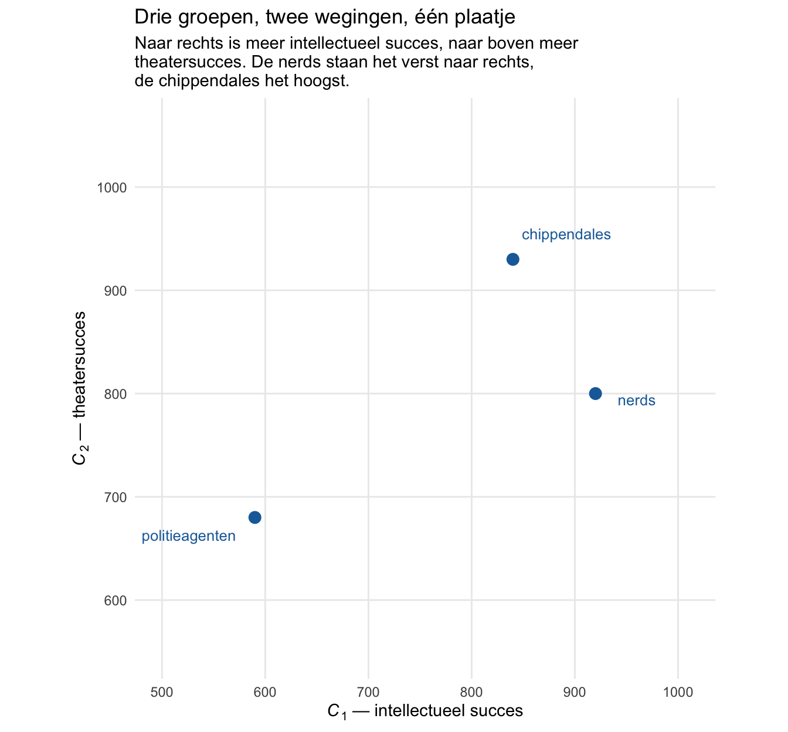
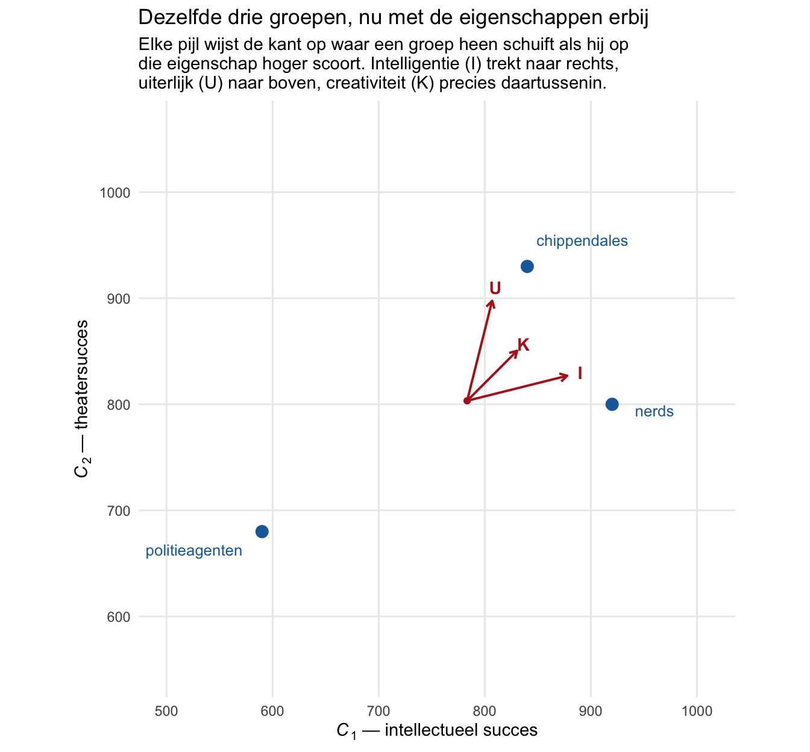
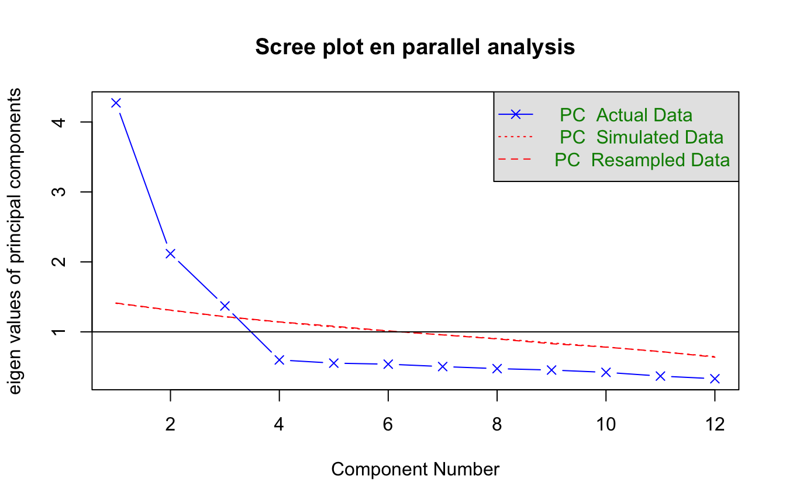
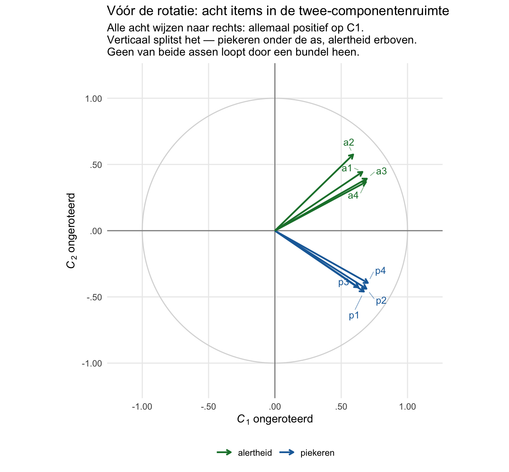
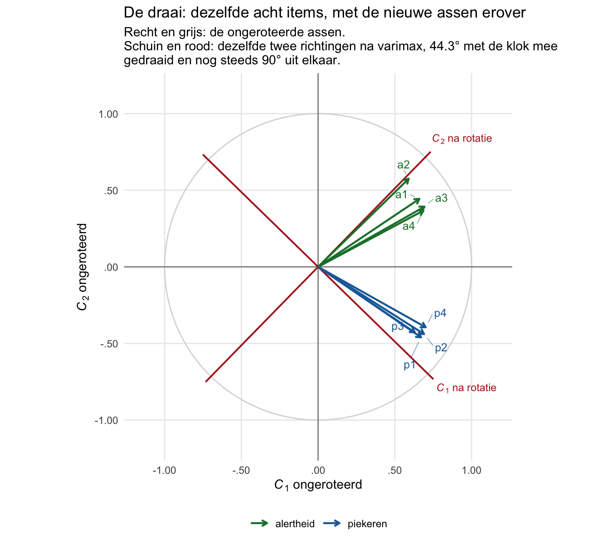
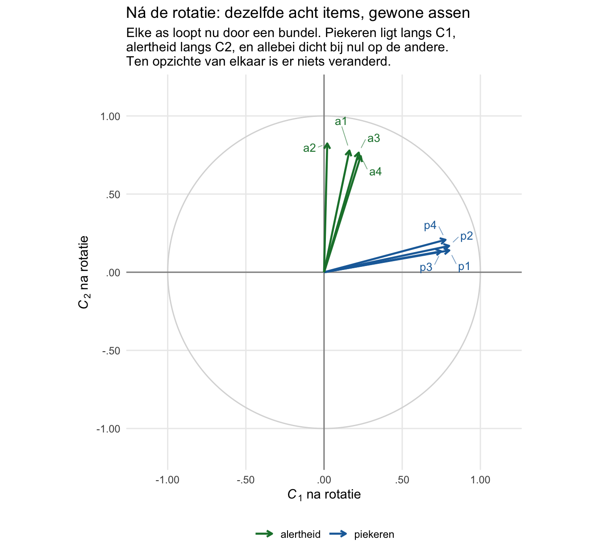
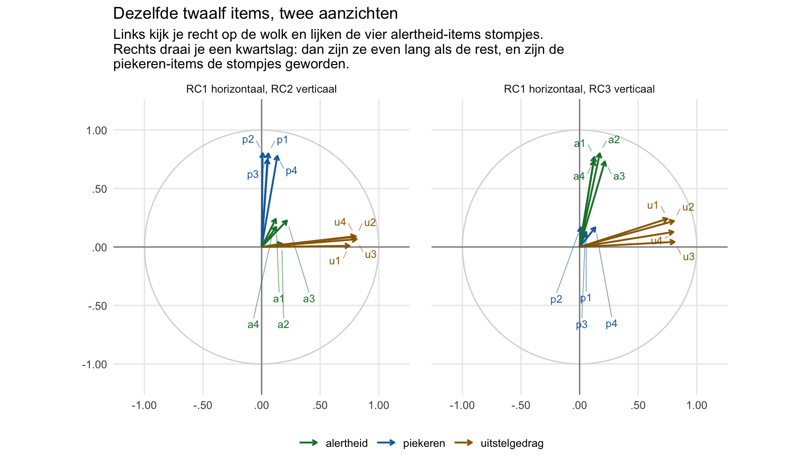
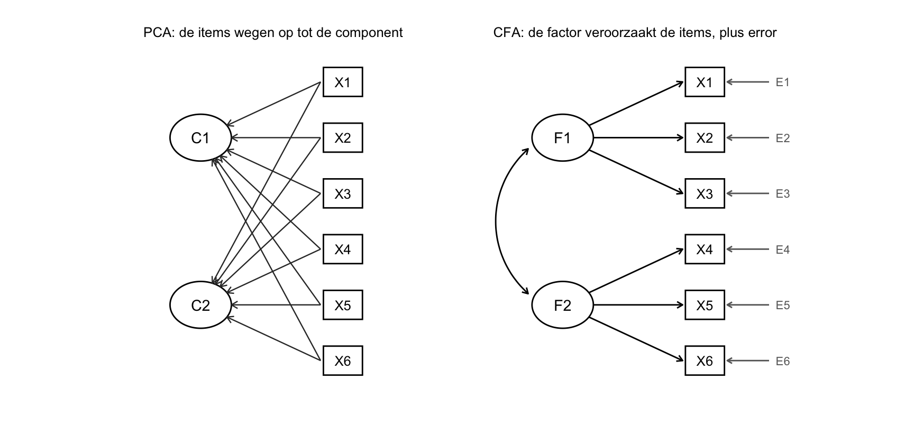

| Drie groepen op creativiteit, uiterlijk en intelligentie | |||
| K | U | I | |
|---|---|---|---|
| nerds | 130 | 100 | 140 |
| politieagenten | 80 | 110 | 80 |
| chippendales | 130 | 140 | 110 |
| Note. K = creativiteit, U = uiterlijke schoonheid, I = intelligentie. | |||
4. Principal Component Analysis (PCA) — minder is meer
Het verhaal van dit thema
De rat zat op de schommel-tak en keek naar de twaalf items van de wezel.
“Twaalf vragen,” zei hij. “Te veel.”
“Dat zegt iedereen,” zei de wezel. “Maar ze meten elk iets anders.”
“Dat zegt iedereen ook.” De rat tikte met zijn klauwtje op een blad. “Ik wil plaatjes zien. Twaalf cirkels in een ruimte, en kijken hoeveel er eronder liggen. Vier? Drie? Twee? Eén?”
“En dan?”
“Dan houden we drie. Of twee. En de rest gooien we weg.” De rat lachte zonder geluid. “Minder is meer.”
OpmerkingHet toverwoord van vandaag is reductie
Er is zoveel informatie. Maar is dat allemaal verschillende informatie? Of zeg je eigenlijk heel vaak stiekem hetzelfde, via een andere weg?
Dat is de hele vraag van dit thema. Je hebt twaalf items. Straks heb je er misschien nog drie dingen voor terug — en als het goed is mis je niets.
We beginnen niet bij de techniek. We beginnen bij drie groepen mensen en een mening.
Nerds, politieagenten en chippendales
Wat een gewicht doet
Stel, je meet drie groepen: nerds, politieagenten en chippendales. En je meet ze op drie dingen — hun creativiteit, hun uiterlijke schoonheid en hun intelligentie. Die drie kort ik af als K, U en I; de K omdat de C verderop al vergeven is aan de componenten.
En de chippendales, voor wie die naam niets zegt: een Amerikaanse stripteasegroep uit de jaren tachtig, beroemd genoeg om een soortnaam te worden. Vlinderdas, manchetten, verder vooral geen overhemd. Houd dat plaatje even vast, want het verklaart zo meteen hun rij in de tabel.
Normaal meet je natuurlijk geen drie dingen maar vijfentwintig of honderd. Drie is hier genoeg om te zien wat er gebeurt.
Kijk even naar de rijen. De nerds zijn creatief en hun intelligentie is sky high; hun uiterlijk valt te bezien. De chippendales scoren hoog op uiterlijk, zijn ook creatief, en hun intelligentie is ook best redelijk. De politieagenten zitten er op K en I onder.
Nu wil je die drie getallen per groep terugbrengen tot één getal. In thema 1 en 2 deed je dat al: je telde de items op (rowSums) of je nam het gemiddelde (rowMeans). Een totaalscore, een schaalscore.
Maar we gaan niet zomaar een gemiddelde nemen. We nemen een gewogen gemiddelde.
Dat ken je al — je tentamencijfer
Je deeltentamen 1 telt voor mee en deeltentamen 2 voor . Je haalt een en een . Wat is je cijfer?
Geen . Het ligt dichter bij de , want die trekt er harder aan.
Hoe reken je het uit? Er is een gezellige manier:
En er is de manier waarin je de gewichten kunt zien staan:
Allebei goed. Maar vanaf nu denken we in die tweede vorm, want daar staat wat we willen zien: wat is het gewichtje dat bij de eerste variabele hoort, en wat bij de tweede?
Dat heet een gewogen som — of, wat hetzelfde is, een gewogen gemiddelde. Een gepoold gemiddelde. Carpoolen: je neemt twee dingen samen en je kijkt naar de weging.
Mijn eerste weging: intelligentie is het belangrijkst
Ik vind in het leven intelligentie nu eenmaal belangrijker dan creativiteit of uiterlijk. Dus ik kies mijn gewichten zo:
Normaal ligt een gewichtje tussen en . Dat maakt hier niet uit — het gaat om het idee. Ruw is ruk, maar het is relatief.
Reken maar mee voor de nerds. Eerst elk gewicht keer zijn score, dan pas optellen:
Kijk waar het gewicht van terechtkomt: die ene regel is in zijn eentje groter dan de andere twee samen.
| Dezelfde drie groepen, teruggebracht tot één gewogen som | ||||
| K | U | I | C1 | |
|---|---|---|---|---|
| nerds | 130 | 100 | 140 | 920 |
| politieagenten | 80 | 110 | 80 | 590 |
| chippendales | 130 | 140 | 110 | 840 |
| Note. C1 = 2K + 1U + 4I. K = creativiteit, U = uiterlijke schoonheid, I = intelligentie. | ||||
Drie scores, teruggebracht tot één. En de nerds staan bovenaan, de politieagenten onderaan.
Hoe komt dat? Kijk naar de gewichten. Ik heb het grootste gewicht aan intelligentie gegeven, dus een score op weerspiegelt vooral intelligentie, en een beetje creativiteit, en nog een klein beetje uiterlijk.
En nu wordt het leuk, want nu ga ik interpreteren. Wat hebben de nerds in het gewone leven méér dan de politieagenten — iets wat je bereikt mét creativiteit, uiterlijk en intelligentie? Zoiets als maatschappelijk succes. En omdat intelligentie hier het zwaarst weegt, noem ik even de mate van intellectueel succes.
Ja, ik ben een beetje bevooroordeeld, en dat mag je horen.
Tweede weging, gewoon omdat het kan
Nu draai ik het om. Ik vind creativiteit nog steeds belangrijk, maar vandaag vind ik uiterlijk nóg belangrijker:
Reken het opnieuw uit. Zelfde tabel, zelfde getallen, andere gewichten.
| Twee wegingen van dezelfde drie eigenschappen | |||||
| K | U | I | C1 | C2 | |
|---|---|---|---|---|---|
| nerds | 130 | 100 | 140 | 920 | 800 |
| politieagenten | 80 | 110 | 80 | 590 | 680 |
| chippendales | 130 | 140 | 110 | 840 | 930 |
| Note. C1 = 2K + 1U + 4I. C2 = 2K + 4U + 1I. K = creativiteit, U = uiterlijke schoonheid, I = intelligentie. | |||||
Kijk wat er gebeurde. Op wonnen de nerds. Op winnen de chippendales.
Zelfde drie groepen. Zelfde negen getallen. Andere winnaar.
Dat is het hele punt van deze bladzijde: een gewogen som is een keuze, en die keuze bepaalt wie er bovenaan komt.
En interpreteren doe je weer. Met wat kom je het verst in het leven als vooral je uiterlijk meetelt? Dan is het niet zozeer intellectueel succes — dan is het, heel ruim genomen, zoiets als theatersucces. Een nerd heeft dat ook wel, maar niet zoveel als een chippendale, want daar heb je vooral uiterlijk voor nodig.
Allebei de wegingen in één plaatje
Nu heb je twee getallen per groep. Twee getallen, dat is een plek op papier: naar rechts, naar boven.
Toon code (de tekenaar die allebei de plaatjes maakt)
# Eén tekenaar voor allebei de figuren, om dezelfde reden als bij de
# ladingenplot verderop: de twee plaatjes moeten op precies één ding
# verschillen, namelijk of de pijlen er staan. Had elk zijn eigen tekencode,
# dan was een verschuiving van een punt niet te onderscheiden van een andere
# marge -- en dit stel beweert juist dat er niets verschoven is.
teken_biplot <- function(titel, ondertitel, pijlen = FALSE) {
# Een vierkant venster om de drie groepen heen. Vierkant moet, want
# coord_fixed() hieronder maakt een stap op de ene as even groot als op de
# andere -- en zonder dat is elke hoek in dit plaatje een leugen.
mid <- c(C1 = mean(range(groepen$C1)), C2 = mean(range(groepen$C2)))
half <- max(diff(range(groepen$C1)), diff(range(groepen$C2))) / 2 * 1.55
# De pijlen beginnen in het midden van de drie groepen. Dat is geen
# willekeurig punt: de plek van een groep is precies dat midden plus de drie
# pijlen, elk keer hoeveel die groep op die eigenschap boven of onder het
# gemiddelde zit. Nagerekend in de setup-chunk.
anker <- c(C1 = mean(groepen$C1), C2 = mean(groepen$C2))
# De lengte van een pijl is een tekenkeuze en geen meting -- in een biplot
# mag je de pijlen als groep korter of langer maken zonder dat er iets aan
# de boodschap verandert. Alle drie krijgen dezelfde factor, dus hun
# onderlinge verhouding klopt wél. De langste pijl komt tot 0.38 van de
# halve vensterbreedte -- zo blijft er ruimte over voor zijn eigen letter.
schaal <- (0.38 * half) / max(sqrt(colSums(bi_pijl^2)))
pijl_df <- data.frame(
eigenschap = colnames(bi_pijl),
xend = anker[["C1"]] + schaal * bi_pijl["C1", ],
yend = anker[["C2"]] + schaal * bi_pijl["C2", ],
# De letter staat in het verlengde van zijn eigen pijl, niet op een plek
# die een uitwijk-algoritme kiest. Anders springt hij tussen de twee lagen.
xtxt = anker[["C1"]] + schaal * 1.13 * bi_pijl["C1", ],
ytxt = anker[["C2"]] + schaal * 1.13 * bi_pijl["C2", ])
p <- ggplot(groepen, aes(C1, C2)) +
geom_point(colour = "#1b6ca8", size = 3.2)
if (pijlen) {
p <- p +
geom_segment(data = pijl_df,
aes(x = anker[["C1"]], y = anker[["C2"]],
xend = xend, yend = yend),
colour = "firebrick", linewidth = 0.7,
arrow = arrow(length = unit(0.18, "cm")),
inherit.aes = FALSE) +
geom_point(x = anker[["C1"]], y = anker[["C2"]], colour = "firebrick",
size = 1.4, inherit.aes = FALSE) +
# Blauw voor de groepen, rood voor de eigenschappen. Dat is het enige
# kleurpaar dat bij deuteranopie uit elkaar blijft vallen; groen naast
# het rood van de pijlen loopt daar in elkaar over.
geom_text(data = pijl_df, aes(x = xtxt, y = ytxt, label = eigenschap),
colour = "firebrick", size = 3.8, fontface = "bold",
inherit.aes = FALSE)
}
# De naam van een groep staat aan de buitenkant: recht wég van het midden van
# de drie. Uitgerekend uit die richting en niet per groep neergezet, zodat het
# label meeschuift als de tabel bovenaan verandert -- en zodat allebei de
# lagen het op exact dezelfde plek zetten.
buiten <- cbind(groepen$C1 - anker[["C1"]], groepen$C2 - anker[["C2"]])
buiten <- buiten / sqrt(rowSums(buiten^2))
etiket <- data.frame(groep = groepen$groep,
x = groepen$C1 + 0.085 * half * buiten[, 1],
y = groepen$C2 + 0.085 * half * buiten[, 2])
p +
geom_text(data = etiket, aes(x = x, y = y, label = groep),
colour = "#1b6ca8", size = 3.4,
hjust = ifelse(buiten[, 1] < 0, 1, 0),
vjust = ifelse(buiten[, 2] < 0, 1, 0),
inherit.aes = FALSE) +
coord_fixed(xlim = mid[["C1"]] + c(-half, half),
ylim = mid[["C2"]] + c(-half, half)) +
labs(x = expression(italic(C)[1] * " — intellectueel succes"),
y = expression(italic(C)[2] * " — theatersucces"),
title = titel, subtitle = ondertitel) +
theme_minimal(base_size = 11) +
theme(panel.grid.minor = element_blank())
}Eerst alleen de drie groepen
Toon code (de drie groepen als punten)
teken_biplot(
titel = "Drie groepen, twee wegingen, één plaatje",
ondertitel = paste0(
"Naar rechts is meer intellectueel succes, naar boven meer\n",
"theatersucces. De ", winnaar_C1, " staan het verst naar rechts,\n",
"de ", winnaar_C2, " het hoogst."))
Twee tabellen zijn één plaatje geworden. Zoek de nerds maar op: 920 naar rechts, 800 omhoog — en daar staan ze.
De nerds en de chippendales liggen dicht bij elkaar, rechtsboven; de politieagenten liggen daar ver vandaan, linksonder, want die verliezen op allebei de wegingen. En kijk naar die twee bovenste: de nerds staan verder naar rechts, de chippendales staan hoger. Geen van beide doet allebei. Dat je op de ene as kunt winnen en op de andere niet, zie je hier in één oogopslag.
En nu de eigenschappen erover
Maar waaróm ligt een groep waar hij ligt? Daarvoor moeten de drie eigenschappen zelf het plaatje in. En dat kan, want een eigenschap heeft hier een richting.
Kijk nog eens naar de twee wegingen. Intelligentie weegt op en op . Eén punt meer intelligentie schuift een groep dus naar rechts en omhoog — dat is een pijl. Bij uiterlijk is het net andersom, en bij creativiteit is het allebei .
Toon code (dezelfde figuur, met de drie eigenschappen erover)
teken_biplot(
titel = "Dezelfde drie groepen, nu met de eigenschappen erbij",
ondertitel = paste0(
"Elke pijl wijst de kant op waar een groep heen schuift als hij op\n",
"die eigenschap hoger scoort. Intelligentie (I) trekt naar rechts,\n",
"uiterlijk (U) naar boven, creativiteit (K) precies daartussenin."),
pijlen = TRUE)
De drie stippen zijn geen millimeter verschoven; er is alleen een laag bijgekomen. En dat rode stipje in het midden, waar de pijlen uit komen, is de gemiddelde groep — daar kom je zo nog op terug.
OpmerkingWat je in deze figuur ziet
Dit heet een biplot — bi van twee, omdat er twee soorten dingen in één assenstelsel staan. De blauwe punten zijn de groepen, de rode pijlen zijn de eigenschappen waaruit die groepen zijn opgebouwd.
Een pijl is een richting, geen plek. Hij zegt: scoort een groep hoger op deze eigenschap, dan verhuist hij in de richting van die pijl. Intelligentie ligt 14° boven de horizontale as — bijna plat naar rechts. Uiterlijk staat op 76°, bijna recht omhoog. Creativiteit op 45°, netjes tussen die twee in. Die graden hoef je nergens uit te rekenen; het gaat om plat, steil, en ertussenin.
Hoe verder twee pijlen uit elkaar, hoe verschillender ze een groep verplaatsen. Uiterlijk en intelligentie staan 62° uit elkaar: dat zijn de twee die elkaar het minst helpen. Over de lengte niets dan dit — uiterlijk en intelligentie zijn even lang, creativiteit is korter, en verder is de schaal een tekenkeuze. Alle drie zijn ze met dezelfde factor opgerekt tot ze goed in beeld staan, dus één getekende pijl staat niet voor één punt.
En het mooiste: de punten volgen uit de pijlen. Kijk naar de nerds en het rode stipje: ze liggen op vrijwel dezelfde hoogte, maar de nerds staan een heel eind verder naar rechts. Dat is precies wat hun scores zeggen. Hun intelligentie ligt 30 punten boven het gemiddelde, en de I-pijl wijst bijna plat naar rechts — dat duwt ze dus opzij en nauwelijks omhoog. Hun uiterlijk ligt juist ónder het gemiddelde, en de U-pijl wijst omhoog — dat trekt de hoogte er weer af. Samen: ver naar rechts, en per saldo geen stap omhoog. Dat is geen plaatje bíj de berekening — het ís de berekening.
Dus wat heb je nu ontdekt? Dat deze vragenlijst van drie items eigenlijk twee richtingen heeft. Een intellectuele-succes-richting als je de items op die ene manier weegt, en een theatersucces-richting als je ze op die andere manier weegt. Misschien zijn dat wel de enige twee wegingen die je wilt hebben. En dan zeg je: ik had drie items, maar dat interesseert me niet meer — ik heb het teruggebracht tot twee nieuwe dingen.
Dat is het gevoel. De rest van dit thema is dat gevoel, met machines erbij.
OpmerkingVraag T1 — Pen-en-papier
Je hebt dezelfde drie groepen en dezelfde drie eigenschappen.
a) Probeer een weging te vinden waarbij de politieagenten winnen, met gewichten die geen van drieën negatief zijn. Schrijf hem op als en reken de drie totalen uit. Lukt het? Zo nee: leg uit waaróm het niet lukt — dat antwoord is hier het echte antwoord.
b) En nu de andere kant op: bestaat er een weging waarbij alle drie de groepen precies even hoog scoren? Negatieve gewichten mogen nu wel. De weging waarbij alles is telt niet mee.
c) Je geeft creativiteit gewicht , uiterlijk gewicht en intelligentie gewicht . Iemand anders gebruikt , en . Verandert de volgorde van de drie groepen?
d) Welke van de drie eigenschappen zou je een gewicht van kunnen geven zonder dat de volgorde op verandert? Wat zegt dat over die eigenschap?
OpgeletAntwoord — open na je eigen poging
a) Het lukt niet, en de reden is scherper dan “ze steken nergens bovenuit”. Leg de politieagenten naast de chippendales: die scoren op alle drie de eigenschappen hoger. Creativiteit 130 tegen 80, uiterlijk 140 tegen 110, intelligentie 110 tegen 80. Welk gewicht je ook aan een eigenschap hangt, zolang dat gewicht niet negatief is levert diezelfde eigenschap de chippendales minstens evenveel op als de politieagenten. Optellen maakt dat nooit meer goed.
En let op waarom het níét genoeg is om te zeggen dat er op elke eigenschap wel iemand boven ze staat. Stel je een andere tabel voor, met twee eigenschappen en drie groepen, en gewichten van en :
Op de eerste eigenschap is groep 1 niet de hoogste (groep 2 heeft 6), en op de tweede ook niet (groep 3 heeft 6). Toch wint groep 1. Want niemand verslaat haar op allebei.
Wat de politieagenten hier dus de das omdoet, is niet dat ze nergens de hoogste zijn. Het is dat één groep ze over de hele linie verslaat. Dat is de les: een gewogen som kan alleen een groep bovenaan zetten die ergens écht uitsteekt.
b) Ja, en er is er precies één soort. Probeer :
Toon code (de weging die alle drie gelijk zet)
as.matrix(groepen[, c("K","U","I")]) %*% c(21, -15, -20) |>
setNames(groepen$groep) [,1]
[1,] -1570
[2,] -1570
[3,] -1570
attr(,"names")
[1] "nerds" "politieagenten" "chippendales" Alle drie hetzelfde getal. Dat is geen toeval en geen trucje: je stelt twee eisen (groep 1 = groep 2, en groep 2 = groep 3) aan drie onbekende gewichten, en twee eisen laten één vrijheid over. Er is dus altijd zo’n weging, bij elke tabel — alleen bestaat hij hier uit een plus en twee minnen, en zo’n weging is inhoudelijk onzin.
En dát is de les. Een weging die iedereen gelijk zet, is een weging die je niets vertelt. PCA zoekt precies de andere kant op: de richting waarin de verschillen het grootst zijn.
c) Nee. Alle drie de totalen worden precies tien keer zo groot, dus de volgorde blijft. Alleen de verhouding tussen de gewichten doet ertoe, niet hun absolute grootte. Daarom mag je gewichten ook herschalen naar iets tussen en zonder dat er inhoudelijk iets verandert.
d) Er zijn er twee: creativiteit en uiterlijk. Alleen intelligentie mag niet op nul.
Toon code (elke eigenschap om de beurt op nul)
for (v in c("K", "U", "I")) {
g <- gew_C1
g[v] <- 0
tot <- weeg(groepen, g)
oordeel <- if (identical(rank(-tot), rank(-groepen$C1)))
"zelfde volgorde" else "ANDERE volgorde"
cat(sprintf("%s op 0 → %s (%s)\n", v,
paste(sprintf("%s %d", groepen$groep, tot), collapse = ", "),
oordeel))
}K op 0 → nerds 660, politieagenten 430, chippendales 580 (zelfde volgorde)
U op 0 → nerds 820, politieagenten 480, chippendales 700 (zelfde volgorde)
I op 0 → nerds 360, politieagenten 270, chippendales 400 (ANDERE volgorde)Dat creativiteit eraf mag, is de verrassing. Die heeft gewicht en uiterlijk maar — de zwaarste van de twee mag er dus net zo goed af. Hoe groot het gewicht is, is dus niet waar het om draait.
Waar het wél om draait, zie je bij de twee groepen die het dichtst bij elkaar liggen: de nerds en de chippendales, met 920 tegen 840. Daar zitten 80 punten tussen. Trek nu per eigenschap hun scores van elkaar af, keer het gewicht:
Kijk naar de bovenste regel: die is . Op creativiteit scoren deze twee groepen allebei 130, dus die eigenschap zegt niets over wie van hen bovenaan staat. Zet hem op nul en er verandert niets. De onderste regel draagt in zijn eentje meer dan de hele kloof; haal die weg en de volgorde kiepert om.
Een eigenschap waarop twee groepen hetzelfde scoren, kan hun onderlinge volgorde niet veranderen — hoe zwaar je hem ook weegt. Wat telt is dus niet hoe groot het gewicht is, maar hoeveel de eigenschap de groepen uit elkaar trekt.
Dit komt terug bij 4.2, dus je hoeft het nu nog niet te kunnen. Daar heten die gewichten ladingen, en daar geldt hetzelfde: ligt een lading dicht bij nul, dan hoort dat item niet bij die component. Maar ver van nul is op zichzelf geen bewijs dat het item de groepen uit elkaar haalt — dat blijft een aparte vraag.
Wat R hier van maakt
De gewichtjes worden gezocht in plaats van gekozen
In het verhaal hierboven koos ík de gewichten. , en , omdat ik dat vond.
Vandaag geef je R die items en zeg je: ga jij maar zoeken of je richtingen vindt.
En wat R dan doet is dit. Hij gaat kijken of die gewichtjes een bepaalde waarde kunnen hebben, zódanig dat er iets zinvols uitkomt — en zinvol betekent hier eerst statistisch: zit er een heftige richting in, een richting waarin veel variatie zit. En als hij die gevonden heeft, zegt hij: leuk, en gaat hij verder zoeken. Kunnen we nóg andere gewichtjes verzinnen? Dat wordt dan de tweede component.
Dat is dezelfde vorm als mijn en hierboven. Alleen staan er nu letters op de plek van de gewichten, want R moet ze nog invullen.
Let op de twee cijfertjes onder de , want die volgorde ligt vast en je komt hem het hele hoofdstuk tegen: eerst het item, dan de component. Dus is het gewicht van item op component , en is het gewicht van datzelfde item op component . Op de eerste regel loopt het eerste cijfertje dus op — de items komen langs — terwijl het tweede op blijft staan.
Vul je in zo’n formule de itemscores van één persoon in, dan rolt er één getal uit: zijn componentscore. Hoe hoog scoort deze persoon op component ? De 920 van de nerds was er al zo een — alleen voor een hele groep, en met gewichten die ik zelf koos. Zo’n componentscore kun je daarna als schaalscore gebruiken in een volgende analyse, net zoals je in thema 1 een somscore gebruikte.
En dán, als de gewichten er staan, gaan we ze interpreteren. Dat is op zich subjectief, en daar zit eigenlijk de hele crux.
OpmerkingA. Wat is PCA?
Principal Component Analysis PCA zoekt gewichten voor je items, zodat een klein aantal gewogen sommen — de componenten — zoveel mogelijk vangt van de variatie die in al die items samen zat.
In één zin: je hebt items, en je vindt (met ) componenten die het meeste samenvatten van wat in die items zit.
Drie dingen die je daarbij vasthoudt:
- Een component is een gewogen som van je items. Precies zoals het tentamencijfer een gewogen som van twee deelcijfers was.
- De gewichten worden gezocht, niet gekozen. Eerst de richting met de meeste variatie, dan de volgende.
- Wat de componenten betékenen, bepaal jij. De machine levert getallen; de interpretatie is mensenwerk, en dus discutabel.
Wiskundig gebeurt dit via een eigenvalue-decompositie van de correlatiematrix, , met de matrix van eigenvectoren en de diagonaalmatrix van eigenwaarden. Die formule hoef je niet te kunnen; hij staat hier zodat je hem herkent als je hem tegenkomt.
OpmerkingEén ding, vier namen — en één die er niet bij hoort
Hier lopen synoniemen doorheen, en ze betekenen in dit thema hetzelfde:
component · dimensie · richting · as
Noem het assen, noem het richtingen, noem het dimensies. Waar het in dit thema écht uitmaakt — bij het verschil tussen PCA en factoranalyse — staat het er expliciet bij. Zie de cross-link-callout hieronder, en de Don’t aan het eind.
En factor? Die hoort niet in het rijtje. Een component een factor noemen is officieel fout, zegt het college — maar PCA wordt zo vaak met factoranalyse verward dat je het in artikelen tegenkomt. Lees je daar factor bij een PCA, dan bedoelt de auteur een component. Zelfs psych doet eraan mee: in principal() heet het aantal componenten dat je vraagt nfactors.
Het vóélt wel vergelijkbaar, en dat klopt ook: een component bundelt items die samen één ding vertellen, en een factor in thema 5, bij de confirmatieve factoranalyse (CFA), doet dat ook. Vergelijkbaar dus, maar niet hetzelfde. Een component is een gewogen som van items: de items maken hem. Een factor zit juist ónder de items en veroorzaakt ze. Vanaf thema 5 merk je waarom dat uitmaakt; nu hoef je alleen te onthouden dat het twee verschillende dingen zijn.
Meneer Holland en de honderd vragen
Reductie, op ware grootte
Holland was een psycholoog die onderzoek deed naar persoonlijkheid en beroepen. Zijn gedachte: als je een bepaalde persoonlijkheid hebt, vind je waarschijnlijk een bepaald beroep leuk. Dat is nogal handig om te weten.
Dus stelde hij heel veel vragen. Denk aan een vragenlijst van honderd items over alledaagse dingen — hoe vaak speel je een muziekinstrument, hoe vaak ga je boodschappen doen, verzin het maar.
Kun je je voorstellen dat sommige van die items met elkaar correleren?
En wat betekent het als twee items correleren? Dat de kans er is dat ze hetzelfde meten, of ongeveer hetzelfde. Speel je vaak muziek, componeer je, en schrijf je vaak gedichten — dan ben je waarschijnlijk creatief. Iets in die trant.
Even rekenen: bij honderd items heb je cellen in de correlatiematrix, min de honderd op de diagonaal is , en omdat elke correlatie er twee keer in staat houd je er over. Dat kun je niet even met het oog bekijken.
Waar het bij mij begon
Ik was tweeëntwintig, en tot dat moment vond ik statistiek saai. Echt saai. Het ging altijd over twee dingen: kun je iets voorspellen, en is er verschil? Is er verschil, is er verschil, is er verschil. Ik dacht in die tijd in derde en vierde afgeleiden — laat los wat dat precies zijn, het komt erop neer dat ik al bezig was met hoe een verandering zélf verandert — en dan krijg je een vak voorgeschoteld dat vraagt of twee gemiddeldes niet toevallig hetzelfde zijn.
Toen kreeg ik zo’n vragenlijst onder statistiek, ingevuld en wel, met bij elke invuller zijn beroep erbij. En ik kreeg er een techniek bij die je hier niet verwacht: geen PCA, maar discriminant-analyse.
Die stelt de vraag namelijk andersom, en dat is makkelijker te zien als je de twee routes naast elkaar legt.
De ene route zoekt groepjes items: welke vragen correleren hoog met elkaar en laag met de rest? Want dan meet zo’n groepje waarschijnlijk één ding. Dat is de route van dit hoofdstuk, en daar komen we zo op.
Discriminant-analyse gaat de andere kant op. Die begint bij groepen mensen die je al kent — bij mij waren dat de beroepen, want die stonden erbij — en zoekt dan de gewogen som van die honderd items die deze beroepen zo ver mogelijk uit elkaar trekt.
Zo’n gewogen som heet een discriminant-functie. Er kwamen er drie uit. Drie functies zijn drie assen, en elke as heeft twee uiteinden, dus dat geeft zes kanten. En die zes bleken precies te zijn wat meneer Holland allang had opgeschreven — alleen had hij ze bedacht en niet gevonden. Zes types, op zijn gevoel en met de vakliteratuur ernaast.
Let op het verschil dat hier telt. De beróepen kende ik: die stonden gewoon in het bestand. De zes types kende ik niet. Die kwamen eruit.
Op de ene as stonden de creatieve beroepen aan de ene kant: kunstenaars, muzikanten, dichters, schrijvers.
En nu de leuke vraag. Welke beroepen denk je dat aan de andere kant van die as zaten — dus welke persoonlijkheid is het mínst creatief?
Politiemensen. Holland noemde die kant conventional. Niet conservatief — dat woord leest als een politieke kleur, en het gaat hier over hoe je werkt. De as loopt van volgend naar zelf bepalend. Een agent voert uit: hij volgt regels, hij bepaalt niet zelf wat er moet gebeuren. Een kunstenaar bepaalt het juist wél zelf, en dat is zo’n beetje zijn hele vak. Vandaar dat die twee zo ver uit elkaar liggen.
Boekhouders horen hier ook thuis, en die van jou wil je precies hier hebben: als de boekhouding optelt tot wat het moet zijn, dan is het klaar.
OpmerkingVolgen heeft lagen — en waarom ik met respect iets heb
Regels zijn wat je doet. Gezag is wie bepaalt wat je doet. En respect is wat je geacht wordt te voelen over wie dat bepaalt. Van gedrag naar structuur naar binnenkant: dat zijn geen drie woorden voor hetzelfde, dat is een trap.
Dat laatste woord is het scherpste, en daar heb ik zelf iets mee. Respect dat uit een regel komt is iets anders dan wat je voelt als je het zélf ziet. Dat tweede heeft andere namen — liefde, ontzag — en daarbij voel je jezelf niet onder of minder. Voorgeschreven respect zet je eronder. Vind jij dat niet — is respect voor jou juist iets dat je verdient — dan heb je een ander gevoel bij hetzelfde woord. Dat is geen ruis: een item waar twee mensen iets anders bij voelen is precies wat thema 7 straks uit elkaar haalt.
En dit is niet de mindere kant van de as. Zes kanten zijn zes kanten, geen ladder van goed naar minder goed. Een agent die regels volgt is geen mislukte kunstenaar.
Op een andere as stonden de investigative beroepen — wetenschappers. Niet toevallig vlak naast de creatievelingen, want voor wetenschap moet je ook creatief zijn. En daar tegenover: de enterprising beroepen, ondernemers. Waar priesters ook onder vielen.
Wat hebben een priester en een ondernemer gemeen, en wat onderscheidt ze allebei van een wetenschapper? Dat is dezelfde vraag, twee kanten op. Een echte wetenschapper is op zoek naar de waarheid. Een ondernemer boeit die waarheid niet zo — die verkoopt een waarheid. Net als een priester: dat is geen zoektocht maar iets wat je oplepelt. Misschien is het juist die onzekerheid van de wetenschap die de twee kanten scheidt.
En dan nog de sociale beroepen tegenover de realistische. Realistisch betekent hier niet “intelligent” maar vooral tastbaar: timmermannen en monteurs, mensen die met gereedschap werken. Als de deur past, dan klopt het. In de sociale beroepen zijn we pas blij als we elkaar begrijpen, en daar is niets tastbaars aan.
En daar zat ik dan, met drie assen uit een vragenlijst waar ik van tevoren niks van wist. Dit was niet is er verschil. Dit was een wereld die openging: je kunt van honderd dingen tegelijk vragen wat ze sámen doen. Zo’n optelling-met-gewichten heet een lineaire combinatie — een deftiger naam voor de gewogen som die je hierboven zelf hebt uitgerekend. Ik kende hem van de middelbare school, maar daar ging hij over lijnen en vlakken. Hier ging hij ineens over mensen.
En het gekste komt nog. Zo’n discriminant-functie — zo’n as — is gewoon een gewogen gemiddelde. Precies dat tentamencijfer van een paar bladzijden terug, alleen met honderd deelcijfers in plaats van twee. Aan de vorm is niets bijzonders. Het bijzondere is de weging: dat er ergens één stel gewichten ligt dat die beroepen zo ver mogelijk uit elkaar trekt, en dat je dat stel kunt vinden. Dát vond ik machtig, en dat vind ik nog steeds.
Vandaag maak jij dezelfde beweging, met één verschil. Ik zocht de weging met het grootste onderscheid tussen de beroepsgroepen. PCA kent helemaal geen groepen en zoekt de weging waarin de scores van de mensen het verst uit elkaar liggen. Zelfde machine, andere vraag.
OpmerkingWaarom dit een goed voorbeeld is
Let op wat ik hierboven dus niet deed. Ik begon niet met zes types en ging toen kijken of ze klopten. Ik begon met honderd vragen waarvan ik niet wist wat ze maten, en er kwamen drie assen uit.
Dat heet exploratief: verkennend, ontdekkend. Je hoeft van tevoren niet te weten wát je items meten.
En ja: ik had groepen en PCA heeft ze niet. Het voorbeeld gaat hier over de bewéging — van honderd dingen naar een paar richtingen — en die is allebei de keren dezelfde.
In de praktijk weet je als psycholoog meestal wél iets — je weet vaak al hoeveel dimensies een vragenlijst hoort te hebben. Maar het hoeft niet, en dat is het mooie. Knal er honderd variabelen in, reduceer, en kijk wat je overhoudt.
Volgende week doe je het andersom: dan heb je een idee en ga je toetsen of het klopt. Dat heet confirmatief, en dat is thema 5.
Nu pas de puntenwolk
Hoeveel richtingen zitten er in een plat vlak?
Neem even twee items, en . Denk aan een wiskundeproefwerk: is een kale rekenvraag (“bereken de top van de parabool”) en is zo’n verhaaltjessom, met een taalverhaal eromheen.
Zijn die twee gecorreleerd? Ja — slimme mensen doen ze allebei goed en domme mensen allebei fout.
Teken de puntenwolk. Positief verband, dus van linksonder naar rechtsboven.
Nu een trucje: haal de assen weg en kijk alleen naar de wolk. Is het nog dezelfde wolk? Ja. De puntjes hebben ten opzichte van elkaar nog steeds dezelfde positie — de relatieve configuratie is niet veranderd.
Beschrijf die wolk nu nog eens. Wat zie je vooral gebeuren?
Eerst het simpele feit: de puntjes hebben niet allemaal dezelfde positie. Ze variëren. Maar hóe variëren ze? Vooral in één richting: van linksonder naar rechtsboven.
Zijn we het eens dat die puntjes op een plat vlak liggen? Dus hoeveel dimensies heeft dit figuur? Twee. Een plat vlak heeft er twee.
Maar een plat vlak heeft niet één richting — het heeft er twee. Dus waar gaat de tweede heen?
Er haaks op. Negentig graden. Zoals de breedte altijd haaks op de lengte staat, en bij lengte-breedte-hoogte precies hetzelfde verhaal. Daar heb je misschien nooit over nagedacht, maar zo kiezen we het altijd.
En nu zijn de richtingen op.
OpmerkingWat je net gedaan hebt
Je hebt twee nieuwe assen door een wolk gelegd. De eerste ligt in de richting waarin de punten het meest variëren; de tweede staat er haaks op.
Noem ze en — en dat zijn dezelfde en als bij de chippendales. Alleen koos ik daar de gewichten zelf, en hier komen ze uit de wolk.
Elk punt kun je nu herdefiniëren op die twee nieuwe assen. Zat een leerling op in de oude assen — een op de rekenvraag en een op de verhaaltjessom — dan heeft hij nu twee nieuwe coördinaten: eentje op en eentje op . Zelfde leerling, zelfde wolk, andere beschrijving.
En dáár zit de winst: die nieuwe assen kunnen een heel nieuwe interpretatie opleveren. Let op wát ze hier betekenen, want dat is niet wat je zou gokken.
loopt door de lange kant van de wolk, en daar liggen de leerlingen die op allebei hoog scoren aan de ene kant en die op allebei laag scoren aan de andere. is dus geen van beide vaardigheden apart — het is zoiets als hoe goed ben je in wiskunde, alles bij elkaar.
En staat daar haaks op. Hoog op betekent dan: hoger op de ene vraag dan je op grond van zou verwachten, en lager op de andere. zegt dus niet hoe góed je bent maar welke kant je overhelt — meer een rekenaar of meer een taalmens.
Die twee soorten komen steeds terug: een eerste richting die optelt, en een tweede die onderscheidt. Bij de ongeroteerde PCA op de bosdieren zie je ze allebei terug, en dan hebben ze ook een naam.
Met twee items houd je twee richtingen over, en dat is geen reductie. Maar je hebt normaal geen twee items — je hebt er vijfentwintig. Dan heb je ook vijfentwintig richtingen, en ga je kijken naar alleen de belangrijkste: die waar veel variatie zit. Als je van vijfentwintig naar drie of vier gaat en je kunt die vier interpreteren, dan heb je wat je zocht.
Dat is ook precies wat de Big Five is: honderd gedragingen, teruggebracht tot vijf assen. En dat is trouwens wat een taalmodel met woorden doet — elk woord krijgt een richting in een ruimte met heel veel dimensies. Oom wijst ongeveer dezelfde kant op als man, met een kleine hoek ertussen, want ze meten iets vergelijkbaars. En tante staat in diezelfde kleine hoek naast vrouw.
Onthoud die hoek. Een kleine hoek tussen twee richtingen betekent gecorreleerd. Een rechte hoek betekent: die twee hebben niets met elkaar te maken. Daar komen we bij het roteren op terug.
OpmerkingB. Wanneer werkt PCA — en wat je er minstens voor nodig hebt
Er zijn voorwaarden voor het doen van een PCA, en de belangrijkste is saai: genoeg mensen. Heb je er te weinig, dan is de oplossing niet betrouwbaar — de gevonden richtingen verschuiven bij de volgende steekproef.
Hoeveel je er nodig hebt hangt af van het aantal items. Vuistregel: , of tien deelnemers per item. Onder zijn PCA-resultaten instabiel.
Daarnaast moeten items continu of interval-achtig zijn (Likert-items behandelen we als interval). Voor binaire items: tetrachorische correlaties, psych::tetrachoric().
Er bestaan ook twee formele controles die vragen of de correlatiematrix genoeg samenhang bevat — KMO en Bartlett’s test of sphericity. Die staan in 4.1.b. Zet ze op je spiekbriefje, maar laat je er niet door in de war brengen: ze zeggen alleen of er iets te vinden valt, niet of wat je vindt iets bétekent.
OpmerkingC. Rat-frame — wat onderzoeken we?
De rat heeft twaalf items en wil weten:
- Hoeveel richtingen zitten er in? (eigenwaarden, scree plot, en of hij ze kan benoemen)
- Welke items horen bij welke richting? (componentladingen, en roteren om ze leesbaar te maken)
- Hoe goed wordt elk item door die richtingen teruggegeven? (communaliteiten)
- En: hij wil plaatjes.
OpmerkingRefresh — wat je uit thema 1, 2 en 3 meeneemt
- Thema 1: schaalniveaus, ruwe scores, norm-scoren. Ruw is Ruk. En:
rowSumstegenoverrowMeans— een somscore van tien items loopt van tot , en dan moet je erbij vertellen hoeveel items het waren én hoe ze liepen. Bij een gemiddelde hoef je alleen dat tweede te weten. Een component is hetzelfde idee, maar dan met ongelijke gewichten. - Thema 2: Cronbach’s als betrouwbaarheid van één schaal. Die aanname is dat de schaal één dimensie heeft. PCA is de toets daarop: laden de items op meerdere componenten, dan is misleidend. Let op — is betrouwbaarheid, niet validiteit en niet dimensionaliteit; PCA gaat over dat derde.
- Thema 3: construct-validiteit via andere tests — convergente en discriminante validiteit, het nomologisch netwerk. (Dat woord discriminant is hier iets anders dan de discriminant-analyse uit het Holland-verhaal: daar was het een techniek, hier een soort validiteit.) Dat was validatie van buitenaf. Vandaag kijken we in de test zelf: hoe hangen de items onderling samen?
WaarschuwingCross-link — PCA-componentlading tegenover EFA/CFA-factorlading
Twee technieken die het allebei over “ladingen” hebben, maar wezenlijk verschillen:
| PCA — componentlading | EFA / CFA / SEM — factorlading | |
|---|---|---|
| Richting | item → component (formatief) | latente factor → item (reflectief) |
| Meetfout | niet gemodelleerd | expliciet gemodelleerd |
| Variantie | geobserveerde variantie | gemeenschappelijke tegenover unieke variantie |
| Rotatie | ja — je draait de assen tot ze leesbaar zijn | EFA ook; bij CFA niet, want daar leg jij de structuur zelf vast |
| Toets op het model | geen | bij CFA en SEM: χ², de fit-maten RMSEA, NFI en CFI, en de residuen |
| Schatting | eigenvector-decompositie | ML / GLS |
| R-functie | prcomp(), princomp(), psych::principal() |
psych::fa(), lavaan::cfa(), lavaan::sem() |
Het verschil zit in de pijl, en dat is een echte psychologische vraag. Neem depressie. Je tekent het als een ovaal, met de items als vierkantjes eromheen. Wijst de pijl van depressie naar de items, dan is depressie iets dat bestaat en dat piekeren veroorzaakt — zoals een biljartbal een andere aantikt. Dat heet reflectief: piekeren is een weerspiegeling van depressie.
Wijzen de pijlen van de items naar de ovaal, dan zeg je iets veel bescheideners: deze gedragingen hangen samen en dat clubje noemen wij depressie. Dat heet formatief.
Ken je de term juppie? Jong, een beetje rijk, een huis, een auto. Als jij aan die indicatoren voldoet, zit er dan een jup in je hoofd? Nee toch. Wij zeggen alleen dat die variabelen bij elkaar zo liggen, en dan noemen we dat een jup. Puur beschrijvend.
PCA kijkt formatief. Een component is de gewogen som van de items — er zit niks onder. Op college heten componenten wel theoretische constructen waar we in geïnteresseerd zijn, en dat bijt elkaar niet: het construct is de naam die jij aan zo’n gewogen som geeft, geen ding dat de items veroorzaakt. Besef alleen dat mensen bij dit soort analyses makkelijk gaan geloven dat het ding er echt is. Heel veel psychologen doen alsof depressie bestaat zoals een steen bestaat, en dat is nooit bewezen.
Wie latente trekjes met meetfout wil modelleren, gebruikt EFA of CFA — thema 5.
Kijk nu naar de rij Variantie. Daar zit het verschil dat volgende week alles stuurt, en het werkboek van de opleiding vat het in één zin samen: PCA wil de varianties verklaren, factoranalyse de covarianties.
Een covariantie is de samenhang tussen twee items in hun eigen ruwe eenheden; deel hem door de twee standaardafwijkingen en je houdt de correlatie over die je al kent.
Lees die zin als een verdeling van het werk. PCA vist uit elk item zoveel mogelijk van dat item zelf op — de communaliteit telt precies dat op. Factoranalyse wil iets anders weten: waarom bewegen item en item samen? Wat een item in zijn eentje doet, mag daar in de error verdwijnen.
Werkmaterialen — R-pakketten en functies
De rat pakt zijn gereedschap
| Gereedschap | Waar het voor is | Pakket |
|---|---|---|
psych::principal() |
PCA met rotatie, ladingen en communaliteiten | psych |
eigen() |
Eigenwaarden en eigenvectoren van de correlatiematrix | base |
psych::scree() |
Scree plot | psych |
psych::fa.parallel() |
Scree plot met parallel analysis erbij (dat laatste is extra, niet uit het college) | psych |
psych::KMO() |
Sampling adequacy | psych |
psych::cortest.bartlett() |
Bartlett’s test of sphericity | psych |
prcomp() |
Base-R PCA (geen rotatie ingebouwd) | base |
OpmerkingCode in dit hoofdstuk — wat moet je kunnen typen?
Open-code op tentamen: psych::principal(.., nfactors = , rotate = "none" / "varimax" / "oblimin"), eigen(), psych::scree(), psych::KMO(), psych::cortest.bartlett(). Code voor plot-decoratie of tabellen staat ingeklapt. psych::fa.parallel() gebruikt dit hoofdstuk ook, maar dan voor parallel analysis, en die zit niet in het college: extra, geen tentamenstof.
Eén tip die bij psych echt helpt: sla je model op in een object en klik het open in je Environment-venster. Dan zie je wat erin zit — $values, $loadings, $communality — en kun je de getallen die je met de hand uitrekende terugvinden. Twee manieren om jezelf te controleren is beter dan één.
Notatie — symbolen voor PCA
OpmerkingSleutelsymbolen
- aantal items (). Het werkboek van de opleiding en de college-sheets zeggen variabelen; in dit hoofdstuk zijn dat je items. Dat het dezelfde letter is als die van een p-waarde, is toeval — zie hieronder.
- aantal behouden componenten (), met .
- Kanttekening bij de sheet (voorlopig, zolang de sheet zo is). De college-sheets gebruiken dezelfde letters als dit hoofdstuk en het werkboek, op één voorbeeld na: bij drie variabelen staat er maar . Dat is omgedraaid: drie variabelen is , twee componenten is .
- componentlading () — het gewicht van item op component . Eerste subscript is het item, tweede de component.
- communaliteit () — per item: hoeveel van de variatie in dat item de behouden componenten samen terugverklaren. Over de rij kwadrateren en dán optellen. Dat optellen mag zolang de componenten ongecorreleerd zijn, dus na varimax wel en na oblimin niet — bij 4.2.d zie je wat er dan misgaat.
- het restje () — per item: wat de behouden componenten níét terugverklaren, . R noemt het uniqueness en zet het in de kolom
u2. - eigenwaarde (λ) — per component: hoeveel variatie die component vangt. Over de kolom kwadrateren en dán optellen.
- proportie verklaarde variantie (VAF, variance accounted for) — λ gedeeld door het aantal items. In de uitvoer van
principal()is dat de regelProportion Var. Een proportie dus, tussen en ; in de lopende tekst staat hij vaak als percentage. - componentcorrelatie (Φ) — alleen bij oblique rotatie: hoe sterk de componenten onderling samenhangen.
De twee formules die je moet kunnen gebruiken:
Ze zien er bijna hetzelfde uit, en dat is geen toeval. Het verschil is de richting waarin je optelt: gaat over een rij (één item, over de componenten heen), λ over een kolom (één component, over de items heen).
Let op de sommen: het is een sum of squares, geen square of the sum. Eerst kwadrateren, dan pas optellen. En omdat je kwadrateert, verdwijnen de minnetjes vanzelf — die hoef je niet eens in te tikken.
Ook handig om te weten: als je álle componenten meeneemt. Gebruik je er minder, dan is de som kleiner, en dat verschil ís de reductie.
De letter gaat in dit vak vier dingen betekenen. Een p-waarde, het aantal items, een partiële correlatie, en straks het aantal parameters van een model. Er staat telkens bij welke bedoeld wordt; je hoeft ze alleen niet door elkaar te halen.
Waar je ze tegenkomt:
- een p-waarde — die ken je al, en die bedoelen wij hier nooit met een kale .
- het aantal items — zo gebruikt dit hoofdstuk hem, en het werkboek van de opleiding en de college-sheets ook. Je ziet hem bovenaan de som voor λ.
- een partiële correlatie — in de formule voor KMO bij 4.1.b, zoals die op de college-sheet staat: is daar de partiële correlatie tussen item en item . Die is daar dus een item, niet het aantal componenten.
- het aantal parameters — dat komt in thema 5, in de formule voor de vrijheidsgraden van een model. Het is dan gewoon het aantal pijlen dat je getekend hebt.
TipVuistregels zijn afspraken, geen wetten
Aantal componenten — de drie criteria van het college:
- Eigenwaarde groter dan 1: houd alle componenten met . In de literatuur heet dat het Kaiser-criterium. Snel, en vaak te veel.
- Elleboogcriterium: zoek in de scree plot de knik — op college heet die de elleboog — waar de verklaarde variantie ineens minder hard daalt, en houd de componenten vóór de elleboog. Visueel en subjectief.
- Interpreteerbaarheid: kies de oplossing die het makkelijkst te interpreteren is.
Op college worden ze vaak samen ingezet, in deze volgorde: eerst criterium 1, voor een grof onderscheid tussen componenten die mogelijk relevant zijn en componenten die zeker niet relevant zijn; dan criterium 3, om uit de mogelijk relevante oplossingen de best interpreteerbare te kiezen. Criterium 1 is dan geen eindantwoord meer maar een bovengrens. En de elleboog wijst aan waar je begint: één oplossing interpreteren is al veel werk, dus je bekijkt eerst die bij de elleboog, en die met één component meer of minder — al is de elleboog in de praktijk vaak niet scherp te zien.
Daarnaast gebruikt dit hoofdstuk parallel analysis: je eigenwaarden naast die van willekeurige data. Dat is een extra van dit oefenboek en zit niet in het college — geen tentamenstof.
Rotatie:
- varimax (orthogonaal): de assen blijven haaks, dus de componenten blijven ongecorreleerd.
- oblimin / promax (oblique): de assen mogen scheef, dus de componenten mogen correleren.
Drempels van dit oefenboek, niet van het college — de college-sheets noemen hier geen getal:
- Componentcorrelatie onder oblimin: vanaf is oblimin passender (zie 4.2.d).
- Communaliteit: als ondergrens; onder is een item kandidaat om weg te halen.
- Componentlading: voor een primaire lading; boven op méér componenten tegelijk is een ambigu item.
Verschillende vakgroepen hanteren andere drempels; noemt je tentamen er een, dan geldt die en niet die van ons. Let ook even op de letter die je college-sheets voor een lading gebruiken — sommige boeken schrijven , andere . Het is hetzelfde getal. Wat overal λ heet is de eigenwaarde, en dat is iets anders dan een lading.
Voor de lading zit je hier trouwens goed: het werkboek van de opleiding schrijft hem óók als , en ook daar is het eerste subscript het item en het tweede de component. Met en erbij staan alle letters van dit hoofdstuk zoals in dat werkboek; je hoeft nergens om te rekenen.
TipEn wat schrijf je dan op een tentamen?
Dat de criteria elkaar tegenspreken is eerlijk, maar je hebt op een tentamen ook gewoon een antwoord nodig. Kijk daarom naar hoe de vraag gesteld is:
| de vraag zegt | jij doet |
|---|---|
| “eigenwaarde groter dan 1” of “volgens het Kaiser-criterium” | tel hoeveel eigenwaarden boven liggen. Niets anders. |
| “volgens het elleboogcriterium” | tel de componenten vóór de duidelijkste knik in de scree plot — de elleboog. |
| “hoeveel componenten kies je” | noem wat de criteria zeggen, zeg welke je volgt, en waaróm. |
Alleen die laatste vraagt om jouw oordeel. Bij de eerste twee is precies één telling goed, ook als je zelf vindt dat het criterium er naast zit — dat mag je erbij zetten, maar het antwoord blijft het getal.
En als je moet kiezen, doe het in de volgorde van het college: eerst criterium 1 — eigenwaarde groter dan — voor het grove onderscheid tussen mogelijk relevante en zeker niet relevante componenten, en dan criterium 3: van de mogelijk relevante oplossingen kies je de best interpreteerbare.
Wat je doet als je een vragenlijst valideert
De hele route, op één bladzijde
Vanaf hier gaat dit hoofdstuk één lange PCA doen, in stukjes. Zes stappen. Hieronder staan ze bij elkaar, zodat je onderweg weet waar je bent — en zodat je later kunt terugslaan zonder het hele hoofdstuk opnieuw te lezen.
| wat je doet | waar het staat | |
|---|---|---|
| 1 | Kijk eerst naar je data. Verdelingen, ontbrekende waarden, en vooral de correlatiematrix: zitten er groepjes items in die onderling hoog correleren? | 4.1.a |
| 2 | Toets de voorwaarden. Genoeg dieren per item — en de twee formele voorvragen, KMO en Bartlett. Haalt KMO de grens niet, dan meld je dat en kijk je verder: in zijn eentje beslist hij niet. | 4.1.b |
| 3 | Bepaal hoeveel componenten. De drie criteria van het college: eigenwaarde boven (het Kaiser-criterium), de elleboog in de scree plot, en interpreteerbaarheid — dat laatste beslis je pas echt bij stap 4 en 5. Hoeveel variantie je vangt is geen vierde criterium: op college zit het in de elleboog, waar de verklaarde variantie ineens minder hard daalt. In zijn eentje kan het nooit beslissen, want elke extra component verklaart iets. | 4.1.c en 4.1.d |
| 4 | Roteer en interpreteer. Lees de ladingen, kijk welke items bij elkaar horen, en geef elke component een naam. | 4.2.a tot en met 4.2.d |
| 5 | Draai hem opnieuw met een ander aantal componenten. Eén keer minder, één keer meer. Wordt de interpretatie er beter of slechter van? ⟲ terug naar stap 3 | 4.2.e |
| 6 | Beslis op inhoud, niet op statistiek. En schrijf op wat je nu weet over je vragenlijst. | 4.2.e, en de modelzin in 4.2.d |
Let op dat pijltje bij stap 5. Dit is geen lijstje dat je één keer van boven naar beneden afloopt. Bij stap 5 herzie je het getal dat je bij stap 3 koos — je legt het model gewoon een ander aantal componenten op — en loopt daarmee opnieuw door stap 4 heen. Dat is geen teken dat je iets fout deed; zo hoort het. Een vragenlijst valideer je niet in één rechte lijn.
En stap 6 is waar het om begonnen was. In thema 3 keek je van buitenaf naar de construct-validiteit van een test, met andere tests ernaast. Vandaag kijk je van binnenuit.
Want je doet dit niet om componenten te verzamelen. Vallen de items uiteen in de groepjes die de ontwerper bedoeld had? Dan gedragen ze zich zoals het construct voorspelt, en dat is steun voor de construct-validiteit van die lijst. Vallen ze ánders uiteen, dan heb je iets geleerd dat je niet zocht.
4.0 Project- en datavoorbereiding
install.packages(c("tidyverse", "psych"))
# Alleen nodig als je de ladingenplot verderop zelf wilt natekenen:
install.packages("ggrepel")load("data/bos_dieren_dimensies.RData")
str(bos_dieren_dimensies)'data.frame': 200 obs. of 14 variables:
$ dier_id : Factor w/ 200 levels "d001","d002",..: 1 2 3 4 5 6 7 8 9 10 ...
$ diersoort: Factor w/ 4 levels "bunzing","egel",..: 4 1 2 2 1 3 4 4 1 4 ...
$ p1 : num 3 2 4 2 3 3 4 3 4 2 ...
$ p2 : num 3 2 4 3 4 3 5 4 4 1 ...
$ p3 : num 2 2 3 5 4 3 4 4 4 2 ...
$ p4 : num 3 3 3 3 4 3 3 4 3 2 ...
$ a1 : num 3 3 4 4 4 4 3 3 4 2 ...
$ a2 : num 3 2 5 3 3 4 2 3 3 3 ...
$ a3 : num 3 2 4 3 4 4 4 4 5 3 ...
$ a4 : num 2 2 4 3 4 3 4 4 3 4 ...
$ u1 : num 3 2 5 2 3 4 1 3 2 4 ...
$ u2 : num 4 3 5 3 3 3 3 5 3 4 ...
$ u3 : num 3 3 5 3 2 3 2 3 3 2 ...
$ u4 : num 3 4 5 3 4 3 2 4 2 4 ...Per dier: dier_id, diersoort, en twaalf items op een -puntsschaal. Vier over piekeren (p1 tot en met p4), vier over alertheid (a1 tot en met a4), vier over uitstelgedrag (u1 tot en met u4). Eén ontbrekende waarde op p3.
200 bosdieren dus, en 80 kraaien in de mini-dataset voor E5.
Let op dat die drie groepjes van vier de bedoeling van de ontwerper zijn, niet een uitkomst. Of de data zich daar iets van aantrekt, moet nog blijken.
items <- c("p1","p2","p3","p4","a1","a2","a3","a4","u1","u2","u3","u4")4.1 PCA — preconditie-checks en eigenwaarden
Hoeveel richtingen zitten erin?
“Eigenwaarden zijn aantal,” zei de rat. “Eerst hoeveel. Daarna welke.”
OpmerkingVoor je gaat rekenen — vijf vragen aan jezelf
- Wie of wat wordt er gemeten? De rat heeft 200 bosdieren genoteerd.
- Wat wordt er gemeten? Twaalf items op een -puntsschaal, ontworpen om drie dimensies te vangen.
- Onafhankelijk of afhankelijk? Geen van beide. Er is geen uitkomst die voorspeld wordt — we vragen hoeveel onderliggende richtingen er in deze twaalf items zitten.
- Meetniveau? Items zijn ordinaal, behandeld als interval.
- Welke techniek? PCA — twaalf items terugbrengen tot een handjevol componenten.
T2 — Wanneer PCA, en wanneer iets anders?
OpmerkingVraag T2 — Pen-en-papier
Kies per vignet: PCA, EFA (exploratory factor analysis), CFA (confirmatory factor analysis), of niets / regressie.
a) Een onderzoeker heeft items van een nieuw welzijnsinstrument. Ze weet niet hoeveel dimensies erin zitten en wil dat ontdekken.
b) Een psychometrist toetst of een -item-vragenlijst past bij een vooraf gespecificeerde drie-factor-structuur.
c) Een psycholoog heeft items en wil ze terugbrengen tot enkele samenvattende scores voor latere regressies; de causale richting interesseert hem niet.
d) Een onderzoeker wil weten of een continue uitkomst voorspelt, gecontroleerd voor twee covariaten.
OpgeletAntwoord — open na je eigen poging
a) EFA. Onbekend aantal dimensies, exploratief, en ze wil latente factoren mét meetfout.
b) CFA. Vooraf gespecificeerde structuur, dus toetsen. CFA geeft model-fit (RMSEA, CFI).
c) PCA. Pure reductie — geen claim over wat eronder ligt, alleen samenvattende scores.
d) Niets / regressie. Geen reductievraag.
Vuistregel:
- Hoeveel dimensies? plus latente factor? = EFA
- Past mijn structuur? = CFA
- Wil ik scores samenvatten? = PCA
- Wil ik voorspellen? = regressie
En let op het onderscheid dat ertoe doet: a) en c) doen allebei iets exploratiefs met veel items. Het verschil is of je gelooft dat er iets ónder de items zit dat ze veroorzaakt.
4.1.a Verkenning — correlatiematrix
Vandaag kijken we in de test zelf. Als twee items hoog correleren, meten ze waarschijnlijk hetzelfde. Dus voordat er één component berekend wordt: kijk naar de correlaties.
cor_mat <- cor(bos_dieren_dimensies[, items], use = "complete.obs")
round(cor_mat, 2) p1 p2 p3 p4 a1 a2 a3 a4 u1 u2 u3 u4
p1 1.00 0.55 0.49 0.54 0.25 0.12 0.35 0.25 0.11 0.17 0.09 0.10
p2 0.55 1.00 0.50 0.56 0.27 0.17 0.27 0.31 0.07 0.12 0.08 0.11
p3 0.49 0.50 1.00 0.48 0.23 0.17 0.24 0.27 0.11 0.12 0.09 0.13
p4 0.54 0.56 0.48 1.00 0.25 0.23 0.29 0.33 0.12 0.20 0.17 0.20
a1 0.25 0.27 0.23 0.25 1.00 0.52 0.49 0.51 0.26 0.28 0.18 0.23
a2 0.12 0.17 0.17 0.23 0.52 1.00 0.53 0.47 0.29 0.31 0.21 0.23
a3 0.35 0.27 0.24 0.29 0.49 0.53 1.00 0.52 0.31 0.37 0.20 0.28
a4 0.25 0.31 0.27 0.33 0.51 0.47 0.52 1.00 0.29 0.25 0.17 0.23
u1 0.11 0.07 0.11 0.12 0.26 0.29 0.31 0.29 1.00 0.55 0.50 0.53
u2 0.17 0.12 0.12 0.20 0.28 0.31 0.37 0.25 0.55 1.00 0.57 0.59
u3 0.09 0.08 0.09 0.17 0.18 0.21 0.20 0.17 0.50 0.57 1.00 0.52
u4 0.10 0.11 0.13 0.20 0.23 0.23 0.28 0.23 0.53 0.59 0.52 1.00
OpmerkingTidyverse-alternatief
library(dplyr)
library(corrr)
bos_dieren_dimensies |>
select(all_of(items)) |>
correlate(use = "complete.obs") |>
shave() |>
fashion(decimals = 2)corrr::correlate() maakt er een tibble van; shave() halveert de symmetrische matrix; fashion() print het netjes.
OpmerkingVragen 4.1.a
a) Zie je een blok-diagonaal patroon — correleren items binnen hetzelfde groepje sterker dan items uit verschillende groepjes?
b) Welke drie blokken herken je?
c) Hoe sterk zijn de correlaties tússen de blokken?
d) Wat voorspelt dat voor het PCA-resultaat?
OpgeletAntwoord — open na je eigen poging
a) Ja, duidelijk. De correlaties binnen een blok liggen tussen en , gemiddeld . Tussen de blokken: tot , gemiddeld .
b) Piekeren (p1–p4), alertheid (a1–a4), uitstelgedrag (u1–u4).
c) Gemiddeld — duidelijk lager dan binnen een blok, maar niet nul. De drie dimensies hangen onderling samen. Onthoud dat, want bij 4.2.d wordt het de reden om oblimin te overwegen.
d) Drie componenten met een eigenwaarde boven , en na rotatie drie nette groepjes. Maar let op: “blok-diagonaal in de correlatiematrix” is een verwachting, geen uitslag. Dat de ontwerper drie dimensies bedoelde, verplicht de data tot niets.
Kijk nog even naar dat patroon, want volgende week begin je ermee. Plussen binnen een blok, bijna-nullen ertussen: hier las je dat áf uit de matrix die er al was. In thema 5 schrijf je precies dit patroon op een blaadje — een + of een 0 per cel — vóórdat je één getal hebt gezien. Dat is dan je model, en de toets vraagt of de data eraan voldoen. Zelfde plaatje, andere volgorde: hier is het een vondst, daar een belofte.
4.1.b KMO en Bartlett
Twee formele voorvragen. Bartlett’s test of sphericity toetst of de correlatiematrix verschilt van een identiteitsmatrix — dus of er überhaupt samenhang tussen de items zit.
Het werkboek van de opleiding zegt dat Bartlett duidelijk significant moet zijn, en direct daarna dat dat in de praktijk weinig betekent: met echte psychologische data is hij vrijwel altijd significant. Tien psychologische variabelen die helemaal niets met elkaar te maken hebben, vind je bijna nooit — zeker niet als ze uit hetzelfde domein komen, en bij een PCA doen ze dat eigenlijk altijd. Een significante Bartlett zegt dus weinig; alleen een níét-significante zegt iets: dan hangt er vrijwel niets samen, en betekent een PCA niets.
De KMO-maat (Kaiser-Meyer-Olkin) vergelijkt twee soorten correlaties. De zero-order-correlaties zijn de gewone correlaties tussen twee items, zonder correctie — die ken je al, alleen niet onder deze naam. De partiële correlaties zijn dezelfde correlaties nadat de overlap met alle andere items eruit gehaald is. KMO deelt de som van alle gekwadrateerde gewone correlaties door diezelfde som plús de som van alle gekwadrateerde partiële correlaties:
Zie de noemer als twee stapels. Hangen je items echt als groep samen, dan verklaren de andere items het meeste van wat twee items delen. Na de correctie blijft er dan weinig over: de partiële correlaties zijn klein, de tweede stapel is bijna leeg, en de breuk komt dicht bij . Blijven er na de correctie nog flinke partiële correlaties over, dan loopt de samenhang niet netjes als groep, en zakt KMO.
KMO ligt altijd tussen en , en doorgaans wordt als voldoende beschouwd. Die grens houdt dit hoofdstuk aan. Rond zit je bij items die als groep níéts delen: dan zijn de twee stapels ongeveer even groot.
Het werkboek van de opleiding noemt KMO misschien wel de duidelijkste aanwijzing of een PCA zin heeft — duidelijker dan Bartlett dus — en zegt over de grens hetzelfde: vanaf is het doorgaans goed genoeg.
Onder de grens is geen stopbord. Een lage KMO kan ook bij items die wél bij elkaar horen: met maar een paar items per groepje blijft de tweede stapel flink gevuld, ook als de structuur netjes is. Bij de kraaien in E7 zie je dat, en daar staat ook waarom.
Haalt KMO de niet, dan zeg je dat eerlijk, en dan kijk je verder, naar twee dingen:
- De correlatiematrix. Zie je groepjes items die onderling duidelijk hoger correleren dan met de rest? Dat is een patroon, geen telling.
- De oplossing. Kun je de componenten straks een naam geven?
Pas met die twee erbij beslis je of je doorgaat. Wat je dan op een tentamen opschrijft, oefen je in E4.
Kanttekening bij de sheet (voorlopig, zolang de sheet zo is). Op de college-sheet staat dat KMO normaal gesproken tussen (het slechtste geval) en ligt. Die is alleen geen bodem: de tweede stapel kan ook groter zijn dan de eerste, en bij items die niets met elkaar delen komt KMO vaker net onder de uit dan erboven. Aan wat als voldoende telt verandert dat niets. Dat blijft de .
R geeft KMO op twee niveaus: één getal voor de hele set (MSA) en één per item (MSAi). MSA staat voor measure of sampling adequacy — het is dus geen tweede maat maar dezelfde, per item uitgesplitst.
OpmerkingDe KMO-formule in symbolen, zoals op de college-sheet
Let op de letters. en zijn hier allebei een item, en is de partiële correlatie tussen die twee. De dubbele som loopt over alle paren items, behalve een item met zichzelf.
# KMO -- sampling adequacy.
psych::KMO(cor_mat)Kaiser-Meyer-Olkin factor adequacy
Call: psych::KMO(r = cor_mat)
Overall MSA = 0.85
MSA for each item =
p1 p2 p3 p4 a1 a2 a3 a4 u1 u2 u3 u4
0.80 0.85 0.88 0.84 0.88 0.83 0.86 0.88 0.87 0.84 0.84 0.85 # Bartlett's test of sphericity. Geef hem het aantal dieren waar cor_mat op
# rust: complete.obs liet het dier met de ontbrekende p3 vallen.
n_compleet <- sum(complete.cases(bos_dieren_dimensies[, items]))
psych::cortest.bartlett(cor_mat, n = n_compleet)$chisq
[1] 854.7273
$p.value
[1] 1.57542e-137
$df
[1] 66
OpmerkingVragen 4.1.b
a) Wat is de overall KMO? Haalt hij de grens van het college?
b) Welke items hebben de laagste individuele MSA? Wat zegt dat?
c) Is Bartlett significant? Wat is de implicatie?
d) Mag je hier PCA uitvoeren?
OpgeletAntwoord — open na je eigen poging
a) KMO . Dat is boven de die op college als voldoende geldt.
b) De individuele MSA’s lopen van (p1) tot (a4) — geen uitschieters. Een laag individueel MSA betekent dat een item weinig deelt met de rest.
c) χ²(66) = 854.73, p < .001. Sterk significant, dus de correlatiematrix verschilt duidelijk van een identiteitsmatrix. Veel meer zegt het niet: met echte data is Bartlett vrijwel altijd significant (zie hierboven). Was hij níét significant geweest, dán was er iets aan de hand — dan hing er vrijwel niets samen.
Let op de n die je Bartlett meegeeft. Dat is het aantal dieren waar je correlatiematrix op rust, 199, en niet de 200 rijen van de dataset: complete.obs liet het dier met de ontbrekende p3 vallen.
d) Ja. KMO haalt de , en bij 4.1.a zag je de drie blokken al in de correlatiematrix staan. Die twee wijzen dezelfde kant op. Of de oplossing ook te interpreteren valt, weet je pas bij 4.2.
Maar wees eerlijk over wat je nu weet. KMO zegt niets over of je straks iets kunt interpreteren: hij zegt dat er íets te vinden valt, niet wát.
Die identiteitsmatrix komt volgende week terug, onder een andere naam. Bartlett toetst tegen een matrix met alleen enen op de diagonaal en nullen daarbuiten: geen enkel item hangt met een ander samen. In thema 5 heet datzelfde model het nulmodel, en dan is het de lat waar je je eigen model langs legt.
Het is niet alleen dezelfde matrix maar ook letterlijk hetzelfde model, en daar is één getal het bewijs van: het aantal vrijheidsgraden. Bartlett heeft er hier 66, en dat is — één voor elke correlatie die op nul gezet wordt:
Kom je dat getal in thema 5 weer tegen bij het nulmodel, dan is dat geen toeval.
Wat wél omdraait, is wat je hoopt. Hier wíl je deze — geen enkel item hangt met een ander samen — verwerpen: was hij waar, dan viel er niets te reduceren en kon je meteen stoppen. In thema 5 toets je je eigen tekening, en daar zegt de iets heel anders, namelijk dat jouw model bij de data past. Díé hoop je juist te houden.
OpmerkingModelzin — zo rapporteer je het
Voorafgaand aan de PCA werd de geschiktheid van de correlatiematrix gecontroleerd. De KMO-maat voor sampling adequacy bedroeg .85, boven de gebruikelijke grens van .70: de twaalf items vertonen voldoende samenhang voor een componentenanalyse. Bartlett’s test of sphericity was significant, χ²(66) = 854.73, p < .001.
4.1.c Eigenwaarden en verklaarde variantie
Elke richting heeft een eigenwaarde (λ) — niet van meneer Eigen, het is gewoon de naam. Hoe groter, hoe meer variatie die component vangt.
ev <- eigen(cor_mat)$values
data.frame(
component = seq_along(ev),
eigenwaarde = round(ev, 3),
VAF = round(ev / length(ev), 3),
cumulatief = round(cumsum(ev) / length(ev), 3)
) component eigenwaarde VAF cumulatief
1 1 4.281 0.357 0.357
2 2 2.120 0.177 0.533
3 3 1.373 0.114 0.648
4 4 0.588 0.049 0.697
5 5 0.554 0.046 0.743
6 6 0.539 0.045 0.788
7 7 0.505 0.042 0.830
8 8 0.473 0.039 0.869
9 9 0.454 0.038 0.907
10 10 0.417 0.035 0.942
11 11 0.367 0.031 0.972
12 12 0.331 0.028 1.000
OpmerkingVragen 4.1.c
a) Hoeveel componenten hebben ?
b) Welk deel van de variantie verklaren de eerste drie samen?
c) Past dat aantal bij de drie dimensies uit het ontwerp?
d) Wat is de logica achter de drempel ?
OpgeletAntwoord — open na je eigen poging
a) 3: , en . De vierde zit op en valt dus af.
b) , oftewel 64.8%. De overige negen richtingen zijn samen goed voor de resterende 35.2%.
c) Ja. Dat is prettig en niet vanzelfsprekend — zie 4.1.d.
d) Je rekent hier op de correlatiematrix, en dat is hetzelfde als rekenen op gestandaardiseerde items: een correlatie is een covariantie waarbij beide variabelen op zijn gezet. Daarmee heeft elk los item per definitie een variantie van , en tellen alle twaalf varianties op tot — precies de som van alle eigenwaarden.
Een component met vangt dus mínder dan één gemiddeld item. Zo’n component kost je een hele nieuwe variabele om uit te leggen en levert minder op dan een item dat je al had.
Waar dit criterium tekortschiet. Kaiser telt alleen af of een getal boven ligt, en bij veel items komen er zomaar een paar net overheen door toeval. Dat je dat laatste van me moet aannemen klopt — hoevéél toeval er in zo’n eigenwaarde zit, kun je meten, en dat is precies wat parallel analysis doet. Die komt in de volgende sectie, als extra: in het college zit hij niet.
Dat hoef je niet van me aan te nemen. Het psych-pakket dat je hierboven laadt heeft een dataset bfi aan boord: 25 persoonlijkheidsitems, ingevuld door 2436 mensen, gebouwd om de Big Five te meten — vijf trekken dus. Kaiser telt er 6. Die laatste staat op , dus boven de grens. Was hij op uitgekomen, dan had je er vijf gezegd — en aan de vragenlijst was niets veranderd.
Daar zit het bezwaar: de drempel is scherp, de vraag erachter niet.
4.1.d Scree plot en parallel analysis
Een scree plot zet de eigenwaarden op volgorde in een figuur. Scree is Engels voor puin. Sta op een berg, kiep een kar puin naar beneden, en kijk waar het blijft liggen: op het stuk waar de helling horizontaal wordt. Dat is de knik — op college heet hij de elleboog — het punt waar de lijn overgaat van steil naar minder steil.
Let op dat woord minder. Een punt waar de lijn van steil naar steiler gaat is een verkeerde knik.
Toon code (scree plot + parallel analysis)
psych::fa.parallel(bos_dieren_dimensies[, items],
fa = "pc",
n.iter = 50,
show.legend = TRUE,
main = "Scree plot en parallel analysis")
Parallel analysis suggests that the number of factors = NA and the number of components = 3
OpmerkingWat je in deze figuur ziet
Scree plot — de blauwe lijn zijn de eigenwaarden van je echte data. Zoek de knik.
Parallel analysis — de rode stippellijn zijn de eigenwaarden van willekeurige data met net zoveel personen en items. Een component telt pas mee als hij bóven die lijn uitkomt: dan is hij meer dan wat toeval zou opleveren. Dit is de extra van dit oefenboek; in het college zit hij niet, en op je tentamen dus ook niet.
Op deze data wijzen Kaiser, de knik en parallel analysis alle drie naar 3. Dat is een cadeautje, geen regel.
Want de knik, Kaiser en parallel analysis kúnnen elkaar tegenspreken. Altijd, altijd, altijd. Dat is geen fout in de data en geen fout in de criteria — het zijn drie verschillende vragen. Kaiser vraagt: haalt deze component één gemiddeld item? De knik vraagt: waar houdt de winst op? En parallel analysis vraagt: is dit meer dan toeval? Drie vragen, drie antwoorden, en niets verplicht ze om hetzelfde te zeggen. Vlak hieronder staan twee datasets waarop ze het inderdaad oneens worden, en die kun je zelf draaien.
Wat doe je dan? Je draait de analyse een paar keer, met een ander aantal componenten. Dat is geen bijzaak maar stap 5 van de route, en het heeft verderop een eigen sectie: Opnieuw draaien met een ander aantal componenten. Daar doen we het op deze twaalf items.
Uiteindelijk is er maar één echte manier om te bepalen hoeveel richtingen je wilt: klopt het, kun je het interpreteren, heb je er iets aan in de praktijk?
De statistische criteria zijn een startpunt om ergens te kunnen beginnen. Inhoudelijke argumenten wegen zwaarder dan statistische. Dat is het derde criterium van het college, interpreteerbaarheid, en ook daar heeft het het laatste woord: eerst schiften de eigenwaarden grof, dan beslist de interpretatie.
TipEén dataset, drie vuistregels, drie antwoorden
Op de bosdieren wijzen alle drie naar hetzelfde getal. Prettig om op te leren, maar je ziet er niet aan waar de schoen wringt. Hier is een dataset waar het wél wringt. Hij zit in R zelf, dus je hoeft niets te downloaden: Harman74.cor, 24 cognitieve tests bij 145 kinderen, verzameld door Holzinger en Swineford in 1939.
ev_h74 <- eigen(Harman74.cor$cov)$values
round(ev_h74[1:8], 2)[1] 8.14 2.10 1.69 1.50 1.03 0.94 0.90 0.82set.seed(2026) # parallel analysis trekt willekeurige data
psych::fa.parallel(Harman74.cor$cov, n.obs = Harman74.cor$n.obs,
fa = "pc", plot = FALSE)$ncompParallel analysis suggests that the number of factors = NA and the number of components = 3 [1] 3Kaiser zegt 5 — zoveel eigenwaarden liggen boven , en de laatste haalt het met maar net.
De knik zegt één. De val van naar is ; daarna zijn de stapjes hooguit . Zo’n eerste component die in zijn eentje 33.9% van de variantie draagt, is de eerste richting die optelt waar je aan het begin van dit hoofdstuk over las — bij cognitieve tests hangt alles met alles samen. Verderop, bij de ongeroteerde oplossing op de bosdieren, krijgt die richting ook echt haar naam.
Parallel analysis zegt 3. Dat is het getal uit de regel hierboven: 3 componenten komen boven wat willekeurige data zou opleveren, de rest niet. Schrik niet van de NA in die uitvoer — met fa = "pc" vraag je alleen naar componenten, dus over factoren heeft R niets te melden. Dat is geen mislukte berekening maar een vraag die je niet gesteld hebt.
Eén, drie of vijf. Wie hier de vuistregel volgt, kiest het aantal componenten niet zelf — die laat de vuistregel het kiezen. Dat is geen ramp zolang je weet wélke vuistregel je volgde en waarom, en dat is precies wat je in een verslag opschrijft.
Eén ding kan deze dataset niet. Harman74.cor is een correlatiematrix, geen ruwe data. Eigenwaarden en ladingen rolt hij gewoon uit, maar componentscores niet: daarvoor heb je per kind een rij getallen nodig, en die kinderen zitten er niet in. Loop je daarop vast, dan ligt het niet aan jou.
OpmerkingVraag T3 — Pen-en-papier
Een PCA op een -item-schaal levert de eigenwaarden:
a) Hoeveel componenten volgens Kaiser?
b) Het college werkt in twee rondes: eerst criterium 1 (eigenwaarde groter dan ) voor een grove schifting, dan criterium 3 (interpreteerbaarheid). Welke oplossingen blijven er na die eerste ronde over om te interpreteren?
c) Waar zou de knik in de scree plot liggen?
d) Noem een situatie waarin je minder componenten kiest dan Kaiser aanwijst.
OpgeletAntwoord — open na je eigen poging
a) Vijf — , , , en liggen allemaal boven .
b) De oplossingen met één tot en met vijf componenten. Vanaf de zesde ligt de eigenwaarde onder , en die componenten zijn dus zeker niet relevant; de eerste vijf zijn mogelijk relevant. Welke oplossing het wordt, beslist pas de tweede ronde, en die kan niet op papier: daarvoor heb je de ladingen nodig. Eén oplossing interpreteren is al veel werk, dus je begint niet bij alle vijf maar rond de knik uit c).
c) Na de derde. Van naar is nog een flinke stap, daarna wordt het vlak (). Dat is precies het puin dat blijft liggen. Merk op dat Kaiser hier vijf zegt en de knik drie — dit is het geval waar ze elkaar tegenspreken, en dat is normaal.
d) Bij interpreteerbaarheid, criterium 3 van het college. Kun je die vierde en vijfde component geen naam geven die ergens op slaat, dan is een oplossing met drie componenten en iets minder verklaarde variantie beter. Bovendien zijn extra componenten vaak instabiel: bij een volgende steekproef staan ze er anders.
4.2 Componentladingen en rotatie
Welke items horen bij welke richting?
“Eigenwaarden zijn aantal,” zei de rat. “Ladingen zijn structuur.”
Een componentlading is het gewichtje van een item in een component — en je mag hem lezen als een correlatie tussen dat item en die component. Gewichtje, coëfficiënt, correlatie: hier is het hetzelfde ding. We nemen als grenswaarde voor “die hoort erbij”.
4.2.a Ongeroteerde PCA
pca_unrot <- psych::principal(bos_dieren_dimensies[, items],
nfactors = 3,
rotate = "none",
use = "complete")
print(pca_unrot, cut = 0.30, digits = 2)Principal Components Analysis
Call: psych::principal(r = bos_dieren_dimensies[, items], nfactors = 3,
rotate = "none", use = "complete")
Standardized loadings (pattern matrix) based upon correlation matrix
PC1 PC2 PC3 h2 u2 com
p1 0.55 0.53 0.66 0.34 2.5
p2 0.55 0.57 0.67 0.33 2.3
p3 0.51 0.50 0.58 0.42 2.5
p4 0.60 0.46 0.65 0.35 2.3
a1 0.65 -0.47 0.64 0.36 1.8
a2 0.61 -0.53 0.67 0.33 2.0
a3 0.70 -0.37 0.63 0.37 1.5
a4 0.66 -0.41 0.61 0.39 1.7
u1 0.57 -0.52 0.62 0.38 2.1
u2 0.64 -0.50 0.71 0.29 2.2
u3 0.51 -0.52 0.36 0.66 0.34 2.8
u4 0.58 -0.49 0.67 0.33 2.5
PC1 PC2 PC3
SS loadings 4.28 2.12 1.37
Proportion Var 0.36 0.18 0.11
Cumulative Var 0.36 0.53 0.65
Proportion Explained 0.55 0.27 0.18
Cumulative Proportion 0.55 0.82 1.00
Mean item complexity = 2.2
Test of the hypothesis that 3 components are sufficient.
The root mean square of the residuals (RMSR) is 0.05
with the empirical chi square 54.41 with prob < 0.011
Fit based upon off diagonal values = 0.98
OpmerkingWaarom er
use = "complete" bij staat
Dat ene dier met de ontbrekende p3. Bij de correlatiematrix hierboven stond use = "complete.obs": gooi dat dier helemaal weg. psych::principal doet dat uit zichzelf ánders — die houdt het dier aan boord voor elk paar items waar het wél twee scores heeft.
Allebei verdedigbaar, maar je krijgt er twee licht verschillende antwoorden mee, en die zou je straks naast elkaar leggen. Met use = "complete" kijken de correlatiematrix en het model naar precies dezelfde dieren.
Op je tentamen zal dit niet gevraagd worden. In je eigen data wél, zodra er gaten in zitten.
Drie dingen in die uitvoer die er niet uitgelegd staan:
h2is de communaliteit, enu2is precies wat er overblijft: . Die twee tellen per rij altijd op tot . Haal die kolom niet door elkaar met het itemu2uit het uitstelgedrag-blok: het item staat links als rijnaam, dezeu2staat bovenaan als kolomkop.- Onderaan staat
SS loadings. Dat is de som van de gekwadrateerde ladingen per kolom — oftewel de eigenwaarde λ. R noemt hem alleen niet zo. De regel eronder,Proportion Var, is diezelfde λ gedeeld door het aantal items: de proportie verklaarde variantie, zoals hij op college heet. - Lege cellen zijn niet nul. Die zijn weggelaten door
cut = 0.30; er staat gewoon een kleiner getal. Zetcut = 0en je ziet ze.
Houd die u2 even vast, want volgende week krijgt hij een eigen pijl. In thema 5 tekent elk item er een pijltje van opzij bij — zijn error — en wat daarin zit heet in de uitvoer zijn residuvariantie. Het is dan geen restje meer dat overblijft maar een deel van het model. Dat komt doordat de vergelijking omdraait. Hier bouw je de component uít de items:
En in thema 5 komt het item juist uit de factoren, met een rest:
Let op dat die geen meer is. Een component maak je uít de items; een factor zit eronder en veroorzaakt ze. Het is met opzet een andere letter, want het is een ander soort ding.
En die rest is de u2 van hierboven. Zelfde getal, andere rol: hier valt het overschot buiten de boot, daar hoort het bij het model.
OpmerkingWat je ziet
Alle twaalf items laden positief en hoog op de eerste component: van tot . Dat is geen toeval maar wat een ongeroteerde oplossing bíjna altijd doet — hij trekt er eerst een algemene richting uit.
Wat is die richting hier? Iets als hoe hoog scoort dit dier op alles tegelijk. Een dier dat hoog zit op piekeren én op alertheid én op uitstelgedrag heeft, om het maar plat te zeggen, een vol hoofd. Dat is wáár, en het is bijna niet bruikbaar — want je wilt juist weten of dit dier meer een piekeraar is of meer een uitsteller.
Kijk daarom ook naar de tweede en derde component. Daar staan plussen én minnen door elkaar. Zo’n component heet een contrastcomponent: hij onderscheidt de ene groep items van de andere in plaats van ze op te tellen.
De eerste oplossing is dus wiskundig prima en didactisch onbruikbaar. Daarom roteren we.
4.2.b Varimax-rotatie
Orto betekent recht. Denk aan de orthodontist — waarom ga je daarheen? Om je tanden recht te zetten. Onthoud dat maar: orto is recht, oftewel een hoek van negentig graden. Bij een orthogonale rotatie zoals varimax blijven de assen dus precies haaks op elkaar staan, en blijven de componenten ongecorreleerd.
Wat je met roteren wilt bereiken, heet op college simple structure: alle ladingen zo dicht mogelijk bij of bij (of ). Per item dus: hoog op één component, en zo dicht mogelijk bij nul op de andere.
Varimax zoekt die stand met één getal, en dat zie je het best aan twee kolommen naast elkaar. Kwadrateer de ladingen van één component. Op de eerste ongeroteerde component liggen die kwadraten allemaal tussen en : dicht op elkaar, weinig variantie. Na varimax staan er in de eerste kolom, RC1, vier tussen en — de uitstelgedrag-items — en de andere acht tussen en : ver uit elkaar, veel variantie. Een paar grote en de rest bijna nul — dat ís simple structure.
Varimax draait de assen dus tot die variantie, opgeteld over alle componenten, zo groot mogelijk is. Op college staat het zo: varimax maximaliseert de som van de varianties van de gekwadrateerde ladingen.
pca_var <- psych::principal(bos_dieren_dimensies[, items],
nfactors = 3,
rotate = "varimax",
use = "complete")
print(pca_var, cut = 0.30, digits = 2)Principal Components Analysis
Call: psych::principal(r = bos_dieren_dimensies[, items], nfactors = 3,
rotate = "varimax", use = "complete")
Standardized loadings (pattern matrix) based upon correlation matrix
RC1 RC2 RC3 h2 u2 com
p1 0.80 0.66 0.34 1.1
p2 0.80 0.67 0.33 1.1
p3 0.75 0.58 0.42 1.1
p4 0.78 0.65 0.35 1.2
a1 0.77 0.64 0.36 1.2
a2 0.80 0.67 0.33 1.1
a3 0.73 0.63 0.37 1.4
a4 0.74 0.61 0.39 1.3
u1 0.75 0.62 0.38 1.2
u2 0.81 0.71 0.29 1.2
u3 0.81 0.66 0.34 1.0
u4 0.80 0.67 0.33 1.1
RC1 RC2 RC3
SS loadings 2.64 2.61 2.52
Proportion Var 0.22 0.22 0.21
Cumulative Var 0.22 0.44 0.65
Proportion Explained 0.34 0.34 0.32
Cumulative Proportion 0.34 0.68 1.00
Mean item complexity = 1.1
Test of the hypothesis that 3 components are sufficient.
The root mean square of the residuals (RMSR) is 0.05
with the empirical chi square 54.41 with prob < 0.011
Fit based upon off diagonal values = 0.98De kolommen heten nu RC1, RC2 en RC3 in plaats van PC1, PC2 en PC3. De R staat voor rotated: psych zegt daarmee zelf dat je naar een geroteerde oplossing kijkt.
OpmerkingVragen 4.2.b
a) Welke items laden primair op welke component?
b) Klopt die groepering met het ontwerp?
c) Hoeveel variantie verklaart elke component na rotatie?
d) Welke items hebben de laagste communaliteit?
OpgeletAntwoord — open na je eigen poging
a) Drie schone groepjes. Elk item laadt minstens op zijn eigen component, en de hoogste kruislading in de hele matrix is — ruim onder de waar je je zorgen zou maken.
b) Ja, de items groeperen zich per ontwerpblok.
c) Na varimax is de proportie verklaarde variantie , en , samen . In procenten: 22.0%, 21.8% en 21.0%, samen 64.8%. In de uitvoer staan ze afgerond in de regel Proportion Var.
d) De communaliteiten lopen van (p3) tot (u2). Geen item komt onder de , dus er hoeft er geen weg.
Let op welke naam welke component krijgt. psych nummert de componenten naar hun eigenwaarde in de ongeroteerde oplossing, dus na rotatie staan RC1, RC2 en RC3 niet per se in de volgorde waarin jij ze zou verwachten. Kijk naar de ladingen, niet naar het nummer.
Wat rotatie wél en niet verandert
Dit is het scherpste stukje van dit thema, en het is ook een tentamensommetje.
Draaien we de assen, dan veranderen de ladingen. Alle ladingen. Dus je zou denken dat alles verandert. Maar er zijn twee dingen die precies hetzelfde blijven, en één die verschuift.
Neem de communaliteit van een item — over de rij kwadrateren en dan optellen.
| De communaliteit van een item verandert niet door rotatie | |||
| item | h² ongeroteerd | h² varimax | verschil |
|---|---|---|---|
| p1 | .659 | .659 | .000 |
| p2 | .672 | .672 | .000 |
| p3 | .578 | .578 | .000 |
| p4 | .654 | .654 | .000 |
| a1 | .637 | .637 | .000 |
| a2 | .671 | .671 | .000 |
| a3 | .632 | .632 | .000 |
| a4 | .613 | .613 | .000 |
| u1 | .621 | .621 | .000 |
| u2 | .706 | .706 | .000 |
| u3 | .663 | .663 | .000 |
| u4 | .666 | .666 | .000 |
| Note. h² = communaliteit: de som van de gekwadrateerde ladingen van een item over de drie behouden componenten – een som die mag omdat de componenten in allebei deze kolommen ongecorreleerd zijn. Het grootste werkelijke verschil tussen de twee kolommen bedraagt 1.4 × 10⁻¹⁵; de kolom verschil toont dat op drie decimalen en is dus overal .000. | |||
Nul. Over de hele linie, tot op 15 decimalen achter de komma nul.
Dat is ook logisch als je het je voorstelt. De communaliteit zegt hoeveel van een item door de drie componenten samen wordt teruggegeven. Draai je die drie assen als één geheel rond, dan blijft het item op dezelfde plek in de ruimte liggen — je bekijkt hem alleen vanuit een andere hoek. Hoe goed hij gevangen wordt, verandert daar niet van.
De eigenwaarden verschuiven wél:
| De eigenwaarden verschuiven wel, maar hun som niet | ||||
| λ ongeroteerd | λ varimax | VAF ongeroteerd | VAF varimax | |
|---|---|---|---|---|
| component 1 | 4.28 | 2.64 | .357 (35.7%) | .220 (22.0%) |
| component 2 | 2.12 | 2.61 | .177 (17.7%) | .218 (21.8%) |
| component 3 | 1.37 | 2.52 | .114 (11.4%) | .210 (21.0%) |
| samen | 7.77 | 7.77 | .648 (64.8%) | .648 (64.8%) |
| Note. λ = eigenwaarde: de som van de gekwadrateerde ladingen van alle items op één component. VAF = variance accounted for, oftewel λ gedeeld door het aantal items (12): de proportie verklaarde variantie, met het percentage tussen haakjes. Som van de drie eigenwaarden: 7.77 ongeroteerd en 7.77 na varimax. | ||||
De eerste component levert in, de andere twee winnen. Dat is precies wat roteren doet: het herverdeelt de variantie over de componenten, in plaats van alles op de eerste te stapelen.
Maar het totaal blijft staan: 64.8% ongeroteerd en 64.8% na varimax. Rotatie verschuift wat; het totaal blijft hetzelfde.
TipWat rotatie doet, in vier regels
| verandert door rotatie? | |
|---|---|
| de ladingen | ja — alle |
| de communaliteit per item () | nee |
| de eigenwaarde per component (λ) | ja |
| de totaal verklaarde variantie | nee |
Wiskundig is het allemaal dezelfde oplossing. Alleen kun je de geroteerde lézen.
4.2.c Plaatjes — de ladingenplot
Een tabel met ladingen is niets anders dan een setje coördinaten. Zet ze in een assenstelsel en je ziet meteen wat er aan de hand is.
Om dat te kunnen tékenen nemen we even acht items en twee componenten — alleen p1–p4 en a1–a4. Met drie componenten kun je de draaiing niet meer op papier volgen.
Je krijgt hem in drie plaatjes: vóór, de draai, en ná. Het derde is degene waar het om gaat.
Toon code (de tekenaar die alle drie de plaatjes maakt)
# Eén tekenaar voor alle drie de figuren, en dat is geen zuinigheid. De drie
# plaatjes moeten op precies één ding verschillen: de getallen die erin gaan.
# Zou elk zijn eigen tekencode hebben, dan wordt een verschil in stijl -- een
# andere cirkel, een andere schaal -- op de bladzijde niet van een verschil in
# de data te onderscheiden. En dit hoofdstuk beweert straks dat er niets
# veranderd is.
teken_ladingen <- function(L, xlab, ylab, titel, ondertitel, assen = NULL) {
lad <- as.data.frame(L)
names(lad) <- c("C1", "C2")
lad$item <- rownames(L)
lad$blok <- ifelse(startsWith(lad$item, "p"), "piekeren", "alertheid")
p <- ggplot(lad, aes(C1, C2)) +
annotate("path",
x = cos(seq(0, 2 * pi, length.out = 200)),
y = sin(seq(0, 2 * pi, length.out = 200)),
colour = "grey85") +
geom_hline(yintercept = 0, colour = "grey55") +
geom_vline(xintercept = 0, colour = "grey55")
# De rode assen gaan er vóór de pijlen in, zodat de pijlen bovenop liggen.
if (!is.null(assen)) {
p <- p + geom_segment(data = assen,
aes(x = x, y = y, xend = xend, yend = yend),
colour = "firebrick", linewidth = 0.7,
inherit.aes = FALSE)
}
p +
geom_segment(aes(x = 0, y = 0, xend = C1, yend = C2, colour = blok),
arrow = arrow(length = unit(0.18, "cm")), linewidth = 0.8) +
# Vier van de acht namen liggen minder dan twee graden uit elkaar, dus
# ggrepel in plaats van een vaste nudge -- anders vallen p2/p3 en a3/a4
# letterlijk over elkaar heen.
ggrepel::geom_text_repel(aes(label = item, colour = blok),
size = 3.4, show.legend = FALSE,
min.segment.length = 0.15, seed = 4,
box.padding = 0.55, point.padding = 0.25,
force = 8, max.overlaps = Inf,
segment.size = 0.3, segment.alpha = 0.6) +
# Blauw en groen: bij deuteranopie versmelt oranje met het rood van de
# assen, en dan lopen de alertheid-pijlen en de as C2-na-rotatie in elkaar
# over.
scale_colour_manual(values = c(piekeren = "#1b6ca8", alertheid = "#1a7f37"),
name = NULL) +
# Ladingen zijn begrensd op 1 en krijgen dus geen voorloopnul, ook niet op
# een aslabel.
scale_x_continuous(breaks = seq(-1, 1, 0.5), labels = apa) +
scale_y_continuous(breaks = seq(-1, 1, 0.5), labels = apa) +
coord_fixed(xlim = c(-1.15, 1.15), ylim = c(-1.15, 1.15)) +
labs(x = xlab, y = ylab, title = titel, subtitle = ondertitel) +
theme_minimal(base_size = 11) +
theme(panel.grid.minor = element_blank(),
legend.position = "bottom")
}Eén — vóór de rotatie
Dit is wat rotate = "none" je geeft. Assen recht, pijlen waar ze vallen.
Toon code (de ongeroteerde oplossing)
teken_ladingen(
fig_u,
xlab = expression(italic(C)[1] * " ongeroteerd"),
ylab = expression(italic(C)[2] * " ongeroteerd"),
titel = "Vóór de rotatie: acht items in de twee-componentenruimte",
ondertitel = paste0(
"Alle acht wijzen naar rechts: allemaal positief op C1.\n",
"Verticaal splitst het — piekeren onder de as, alertheid erboven.\n",
"Geen van beide assen loopt door een bundel heen."))
Alle acht wijzen naar rechts, en geen van de twee assen loopt door een bundel heen. Dat is de ongeroteerde oplossing die je in 4.2.a in getallen zag: een eerste component die alles optelt, en een tweede die het verschil doet. Leesbaar is het niet — je kunt geen enkele as een naam geven.
Twee — de draai
Toon code (ladingenplot met geroteerde assen)
# De geroteerde assen: de kolommen van de rotatiematrix, doorgetrokken
# naar beide kanten zodat het een as wordt en geen pijl.
as_lijnen <- data.frame(
x = -1.05 * Rot[1, ], y = -1.05 * Rot[2, ],
xend = 1.05 * Rot[1, ], yend = 1.05 * Rot[2, ],
naam = c("C1 na rotatie", "C2 na rotatie")
)
teken_ladingen(
fig_u,
xlab = expression(italic(C)[1] * " ongeroteerd"),
ylab = expression(italic(C)[2] * " ongeroteerd"),
titel = "De draai: dezelfde acht items, met de nieuwe assen erover",
ondertitel = paste0(
"Recht en grijs: de ongeroteerde assen.\n",
"Schuin en rood: dezelfde twee richtingen na varimax, ",
graden(abs(fig_hoek)), "° met de klok mee\ngedraaid en nog steeds ",
fig_haaks, "° uit elkaar."),
assen = as_lijnen) +
annotate("text", x = as_lijnen$xend[1], y = as_lijnen$yend[1],
label = "italic(C)[1]*' na rotatie'", parse = TRUE,
colour = "firebrick", hjust = -0.05, vjust = 1.4, size = 3.2) +
annotate("text", x = as_lijnen$xend[2], y = as_lijnen$yend[2],
label = "italic(C)[2]*' na rotatie'", parse = TRUE,
colour = "firebrick", hjust = -0.02, vjust = -0.8, size = 3.2)
OpmerkingWat je in deze figuur ziet
De pijlen zijn de items. Elk item staat op de coördinaten (lading op , lading op ). Meer is het niet — dit plaatje ís de tabel.
De hoek tussen twee pijlen zegt iets over hun samenhang. Een kleine hoek betekent gecorreleerd; een rechte hoek betekent dat ze weinig met elkaar te maken hebben. Precies zoals oom en man. Let op het woord iets: de hoek is een goede indicatie en geen aflezing. p1 en p2 staan hier 2.0° uit elkaar, wat er bijna gelijk uitziet, terwijl hun werkelijke correlatie is.
De lengte van een pijl is de wortel van zijn communaliteit. Een item dat volledig door deze twee componenten wordt gevangen () zou precies op de lichtgrijze cirkel liggen. Deze acht komen tot .76–.82.
Kijk naar de rechte assen, de grijze. Alle acht de pijlen wijzen naar rechts: alle acht laden positief op de ongeroteerde . En verticaal splitst het: de vier piekeren-items zitten onder de as, de vier alertheid-items erboven. Dat is de contrastcomponent van de ongeroteerde oplossing, nu zichtbaar.
Kijk nu naar de schuine assen, de rode. Het hele kruis is 44.3° met de klok mee gedraaid. De as die schuin omlaag loopt heet C1 na rotatie en gaat door de piekeren-bundel; de as die schuin omhoog loopt heet C2 na rotatie en gaat door alertheid. Ze staan nog steeds precies 90° op elkaar — dat is de orthodontist.
Draai je hoofd mee en je ziet het: de piekeren-items liggen nu langs hun eigen rode as en dicht bij nul op de andere, en bij alertheid andersom. Dát is roteren. Dezelfde acht pijlen, dezelfde wolk, andere assen. En opeens leesbaar.
TipHier zie je ook waaróm de communaliteit niet verandert
De pijlen hebben zich niet verroerd. Alleen het assenkruis is gedraaid.
Een communaliteit is de lengte van zo’n pijl, in het kwadraat — en een draaiende as maakt een liggende pijl niet korter.
De ladingen veranderen wel, want dat zijn de coördinaten van de pijl ten opzichte van de assen, en die assen zijn net verzet. Zo kunnen alle getallen in de tabel veranderen terwijl er niets beweegt.
Drie — ná de rotatie
En dan het plaatje dat je in een artikel te zien krijgt.
Want zo staat het er daar niet bij. Niemand tekent twee assenkruizen over elkaar heen; er staat één stel assen, recht, met de items eromheen. De draai is uit beeld verdwenen — niet weggemoffeld, gewoon klaar. Dus rechten we de rode assen: we leggen ze horizontaal en verticaal neer en kijken er recht op.
Toon code (de geroteerde oplossing, recht vooruit)
teken_ladingen(
fig_v,
xlab = expression(italic(C)[1] * " na rotatie"),
ylab = expression(italic(C)[2] * " na rotatie"),
titel = "Ná de rotatie: dezelfde acht items, gewone assen",
ondertitel = paste0(
"Elke as loopt nu door een bundel. Piekeren ligt langs C1,\n",
"alertheid langs C2, en allebei dicht bij nul op de andere.\n",
"Ten opzichte van elkaar is er niets veranderd."))
TipVergelijk dit met het eerste plaatje
Leg ze naast elkaar en het lijkt of de wolk gekanteld is. Dat klópt ook — maar hij is als één geheel gekanteld, en dat is iets heel anders dan verschoven.
Let op de richting, want het getal is twee keer hetzelfde en de draai niet. De assen gingen 44.3° met de klok mee; zet je ze daarna recht, dan staat de wolk 44.3° tegen de klok in — de alertheid-bundel is van schuin-rechtsboven naar recht omhoog gegaan.
Eén ding kun je zelf narekenen zonder iets te meten: de opening tussen de twee bundels. Die is in het eerste plaatje 66.6° en in dit plaatje 66.6° — apart opgemeten, niet overgeschreven. De waaier binnen elke bundel ook. Er is dus niets uit elkaar getrokken of in elkaar geduwd.
En wat je niet met het blote oog ziet, is nagemeten: de acht pijlen zijn even lang gebleven, alle 28 hoeken tussen twee pijlen zijn gelijk gebleven, en alle acht draaiden precies evenveel. Alle drie de verschillen zijn nul — letterlijk nul, op de afrondingsruis van de computer na, die in de orde van 2.1 × 10⁻¹⁴ ligt.
Dat laatste is de scherpste van de drie. Was er ook maar één pijl een halve graad meer gedraaid dan de rest, dan was de wolk vervormd en had roteren de data veranderd. Dat is niet gebeurd. Je hebt niet de pijlen verzet — je hebt je hoofd gedraaid.
Wat wél veranderde: de getallen. a2 stond op en , en staat nu op en . Ladingen zijn afstanden tót de assen, en die assen liggen ergens anders. Het item niet.
BelangrijkEn hier zie je alvast het probleem met varimax
Ga terug naar het eerste plaatje en meet de hoek tussen de twee bundels. De piekeren-pijlen wijzen daar gemiddeld 32.6° omlaag, de alertheid-pijlen 34.0° omhoog: samen 66.6° uit elkaar.
Geen 90°.
Maar varimax moet zijn assen haaks houden. Dus het beste wat hij kan doen is ze zo neerleggen dat ze er allebei even ver naast zitten — 11.7° naast het midden van hun eigen bundel, aan de buitenkant.
Dat zie je in het derde plaatje terug, en je hoeft er niets voor op te meten: geen van de acht pijlen ligt aan de buitenkant van zijn eigen as. De piekeren-pijlen hangen allemaal een stukje bóven de horizontale as, de alertheid-pijlen allemaal een stukje rechts van de verticale — naar elkaar toe, allebei 11.7°.
Die 66.6° is de meetkundige vorm van wat je bij 4.1.a al in de correlatiematrix zag: piekeren en alertheid hángen samen. Twee bundels die minder dan 90° uit elkaar staan, zijn twee componenten die correleren. Wat als we die eis van de rechte hoek nou eens laten vallen?
4.2.d Oblimin — moeten die assen wel haaks?
Varimax dwingt de componenten ongecorreleerd. Maar wie zegt dat dat terecht is?
Bij intelligentie zijn de dimensies vaak wél gecorreleerd — ruimtelijk inzicht hangt samen met taalvermogen. Bij een oblique rotatie zoals oblimin mogen de assen scheef staan, en mogen de componenten dus correleren.
pca_obl <- psych::principal(bos_dieren_dimensies[, items],
nfactors = 3,
rotate = "oblimin",
use = "complete")
print(pca_obl, cut = 0.30, digits = 2)Principal Components Analysis
Call: psych::principal(r = bos_dieren_dimensies[, items], nfactors = 3,
rotate = "oblimin", use = "complete")
Standardized loadings (pattern matrix) based upon correlation matrix
PC3 PC2 PC1 h2 u2 com
p1 0.82 0.66 0.34 1.0
p2 0.81 0.67 0.33 1.0
p3 0.76 0.58 0.42 1.0
p4 0.78 0.65 0.35 1.0
a1 0.80 0.64 0.36 1.0
a2 0.85 0.67 0.33 1.0
a3 0.73 0.63 0.37 1.1
a4 0.75 0.61 0.39 1.0
u1 0.75 0.62 0.38 1.1
u2 0.80 0.71 0.29 1.0
u3 0.85 0.66 0.34 1.0
u4 0.82 0.67 0.33 1.0
PC3 PC2 PC1
SS loadings 2.64 2.61 2.53
Proportion Var 0.22 0.22 0.21
Cumulative Var 0.22 0.44 0.65
Proportion Explained 0.34 0.34 0.33
Cumulative Proportion 0.34 0.67 1.00
With component correlations of
PC3 PC2 PC1
PC3 1.00 0.18 0.37
PC2 0.18 1.00 0.35
PC1 0.37 0.35 1.00
Mean item complexity = 1
Test of the hypothesis that 3 components are sufficient.
The root mean square of the residuals (RMSR) is 0.05
with the empirical chi square 54.41 with prob < 0.011
Fit based upon off diagonal values = 0.98# Component-correlatiematrix.
cat("\nComponentcorrelaties:\n")
Componentcorrelaties:round(pca_obl$Phi, 2) PC3 PC2 PC1
PC3 1.00 0.18 0.37
PC2 0.18 1.00 0.35
PC1 0.37 0.35 1.00
OpmerkingVragen 4.2.d
a) Hoe sterk correleren de componenten onder oblimin?
b) Vanaf welke componentcorrelatie verkies je oblimin boven varimax?
c) Verschillen de primaire ladingen tussen varimax en oblimin?
d) Wat rapporteer je bij een oblique oplossing?
OpgeletAntwoord — open na je eigen poging
a) De drie componentcorrelaties liggen tussen en , gemiddeld . De drie dimensies hangen dus echt onderling samen — precies wat je bij 4.1.a al zag aan de correlaties tussen de blokken.
Die scheve hoek tussen twee assen krijgt in thema 5 een eigen streepje op je tekening: daar trek je tussen twee factoren een dubbele pijl als je vindt dat ze mogen samenhangen, en laat je hem weg als je vindt van niet. Wat hier uit de rotatie róllt, kies jij daar zelf.
b) Vuistregel: vanaf tussen componenten is oblimin theoretisch passender; onder is varimax simpeler en praktisch gelijk. Daartussen — dus tussen en — zegt de vuistregel niets, en dat is geen slordigheid maar het punt: daar beslist de inhoud. De betere vraag is sowieso inhoudelijk: verwacht je dat deze constructen samenhangen? Bij piekeren, alertheid en uitstelgedrag: ja, natuurlijk.
c) De primaire ladingen worden onder oblimin meestal iets hoger en de kruisladingen iets lager, omdat de dwang van de rechte hoek eraf is. De structuur — welk item bij welke component hoort — verandert hier niet.
d) Bij oblimin rapporteer je beide: de ladingen én de componentcorrelaties. Zonder die tweede matrix weet je lezer niet hoe scheef de assen stonden, en kan hij de ladingen niet op waarde schatten.
Nog één ding, en dit scheelt je werk: lees h2 hier gewoon uit de uitvoer. Niet narekenen met de hand, zodra de assen scheef staan. Waarom niet:
Het snelle sommetje uit de notatie — kwadrateer de ladingen van een item en tel ze op — werkt omdat de componenten ongecorreleerd zijn. Bij varimax is dat zo, en dan klopt het tot ver achter de komma. Onder oblimin staan de assen scheef, en dan telt de samenhang tússen de componenten ook mee. Doe je het sommetje tóch, dan zit je ernaast: bij a3 het meest, met waar de communaliteit in werkelijkheid is. Dat scheelt , en dat is geen afrondingsverschil.
De communaliteit zélf is niets veranderd — onder oblimin tot op de laatste decimaal gelijk aan die onder varimax, precies zoals de tabel hierboven zegt. Alleen het sommetje breekt, niet het getal.
En dit is geen losse voetnoot. In thema 5 gebeurt precies hetzelfde zodra je twee factoren laat samenhangen: ook daar mag je niet meer zomaar kwadrateren en optellen, want de dubbele pijl tussen die twee telt dan mee. Dezelfde reden, ander hoofdstuk.
OpmerkingModelzin — zo rapporteer je het
Een principale componentenanalyse met oblimin-rotatie op de twaalf items leverde drie componenten met een eigenwaarde groter dan 1, samen goed voor 64.8% van de variantie. De items laadden primair op de verwachte component; de componenten correleerden onderling tussen .18 en .37.
BelangrijkDon’t: PCA gebruiken waar EFA of CFA gevraagd is — en het factor-analyse noemen
Hier moet ik even snauwen.
PCA wordt in de praktijk vaak gebruikt als alternatief voor EFA, zonder dat de auteur erbij zet dat hij PCA bedoelt. “We voerden een factor-analyse uit met varimax-rotatie en behielden drie factoren.” En dan staat er psych::principal() in de code. Dat is geen factor-analyse, dat is PCA.
Het verschil is de pijl uit de cross-link-callout:
- PCA — de component is een gewogen som van de items. Formatief, geen meetfout.
- EFA / CFA — de items zijn manifestaties van een latente factor mét meetfout. Reflectief.
Wie latente trekjes modelleert — dispositie, persoonlijkheid, vermogen — moet EFA of CFA gebruiken. Wie samenvattende scores wil voor een latere regressie, mag PCA gebruiken, maar moet het dan ook PCA noemen.
In papers gebeurt dit onophoudelijk. Reviewers laten het door, auteurs leren het niet beter, en de volgende generatie leest het als geldig. Dat is conceptuele drift door slordigheid. Het kost niemand iets om de juiste term te gebruiken; het kost iedereen iets als de termen door elkaar gaan lopen.
Ik wil mensen tegenkomen die “factor analysis with principal components extraction” schrijven en dan serieus vragen of ze het verschil kennen. Spoiler: meestal niet — maar ze weten wél dat het in oude SPSS-output zo heette. Dat verandert de feiten niet.
Regel: zeg wat je doet. PCA als je PCA doet, EFA als je EFA doet. Niet door elkaar.
4.2.e Opnieuw draaien met een ander aantal componenten
Een PCA doe je nooit maar één keer.
Je doet hem een paar keer — één keer met twee componenten, één keer met drie, misschien zelfs met vier — en dan kijk je welke oplossing je het beste uitgelegd krijgt. Dat klinkt als vals spelen: net zolang doorzoeken tot er iets moois uitkomt. Het is precies andersom. De criteria uit 4.1.d hebben je een startpunt gegeven, en nu ga je kijken of dat startpunt ook een tabel oplevert die je kúnt lezen.
Drie componenten waren het. Dus draaien we er nu twee, en daarna vier.
Twee componenten
pca_2 <- psych::principal(bos_dieren_dimensies[, items],
nfactors = 2,
rotate = "varimax",
use = "complete")
print(pca_2, cut = 0.30, digits = 2)Principal Components Analysis
Call: psych::principal(r = bos_dieren_dimensies[, items], nfactors = 2,
rotate = "varimax", use = "complete")
Standardized loadings (pattern matrix) based upon correlation matrix
RC1 RC2 h2 u2 com
p1 0.76 0.58 0.42 1.0
p2 0.79 0.62 0.38 1.0
p3 0.72 0.51 0.49 1.0
p4 0.75 0.58 0.42 1.0
a1 0.44 0.48 0.42 0.58 2.0
a2 0.51 0.36 0.39 0.61 1.8
a3 0.50 0.50 0.49 0.51 2.0
a4 0.41 0.52 0.44 0.56 1.9
u1 0.77 0.60 0.40 1.0
u2 0.80 0.65 0.35 1.0
u3 0.73 0.53 0.47 1.0
u4 0.76 0.58 0.42 1.0
RC1 RC2
SS loadings 3.23 3.17
Proportion Var 0.27 0.26
Cumulative Var 0.27 0.53
Proportion Explained 0.50 0.50
Cumulative Proportion 0.50 1.00
Mean item complexity = 1.3
Test of the hypothesis that 2 components are sufficient.
The root mean square of the residuals (RMSR) is 0.07
with the empirical chi square 123.95 with prob < 0.00000000089
Fit based upon off diagonal values = 0.96
OpmerkingWat je ziet bij twee componenten
Piekeren en uitstelgedrag krijgen elk een eigen component. Het alertheid-blok niet — dat wordt verdeeld: 3 van de 4 items gaan mee met piekeren, 1 met uitstelgedrag.
En ze gaan geen van alle van harte. Hun kruislading — de op een na grootste lading van een item, dus wat het op een ándere component achterlaat — loopt van tot , stuk voor stuk boven de . Ter vergelijking: bij drie componenten was de hóógste kruislading in de hele matrix , en kwam er geen enkel item boven de .
Probeer die verdeling van 3 om 1 maar eens na te tellen in de uitvoer hierboven, dan loop je vast op a3: op twee decimalen staat daar twee keer . Hij gaat naar piekeren, maar met een marge van — een verschil dat pas achter de derde decimaal zichtbaar wordt. R rekent met de onafgeronde getallen; jij ziet de afgeronde. Dat is geen slordigheid van de uitvoer maar het beste bewijs dat dit item nergens thuishoort.
Een item met twee bijna even grote ladingen hoort nergens helemaal bij. En een component waar zulke items in zitten, krijg je niet benoemd: hij is deels piekeren, deels alertheid. Je kunt er nog steeds iets boven schrijven — maar je gelooft het zelf niet.
Vier componenten
pca_4 <- psych::principal(bos_dieren_dimensies[, items],
nfactors = 4,
rotate = "varimax",
use = "complete")
print(pca_4, cut = 0.30, digits = 2)Principal Components Analysis
Call: psych::principal(r = bos_dieren_dimensies[, items], nfactors = 4,
rotate = "varimax", use = "complete")
Standardized loadings (pattern matrix) based upon correlation matrix
RC2 RC1 RC3 RC4 h2 u2 com
p1 0.69 0.59 0.83 0.17 2.0
p2 0.79 0.67 0.33 1.2
p3 0.80 0.69 0.31 1.2
p4 0.78 0.66 0.34 1.2
a1 0.77 0.65 0.35 1.2
a2 0.81 0.69 0.31 1.1
a3 0.64 0.59 0.81 0.19 2.3
a4 0.75 0.65 0.35 1.3
u1 0.75 0.62 0.38 1.2
u2 0.80 0.74 0.26 1.3
u3 0.81 0.68 0.32 1.0
u4 0.80 0.67 0.33 1.1
RC2 RC1 RC3 RC4
SS loadings 2.65 2.49 2.39 0.82
Proportion Var 0.22 0.21 0.20 0.07
Cumulative Var 0.22 0.43 0.63 0.70
Proportion Explained 0.32 0.30 0.29 0.10
Cumulative Proportion 0.32 0.62 0.90 1.00
Mean item complexity = 1.3
Test of the hypothesis that 4 components are sufficient.
The root mean square of the residuals (RMSR) is 0.05
with the empirical chi square 54.99 with prob < 0.00031
Fit based upon off diagonal values = 0.98
OpmerkingWat je ziet bij vier componenten
De drie blokken staan er nog gewoon. Er is een vierde component bij gekomen, en de vraag is alleen wat die doet.
Die nieuwe heet RC4 en staat in de laatste kolom. Let op de koppen: psych nummert ze naar de ongeroteerde eigenwaarde, dus ze staan niet op volgorde van links naar rechts. De regel SS loadings onderaan zegt welke kolom het zwakst is.
Kijk eerst naar de eigenwaarde daarvan: λ = 0.82. Onder de , dus deze component vangt minder dan één gemiddeld item.
En kijk dan wie hem draagt. Er halen maar twee items de — de grens voor een primaire lading uit de vuistregels: p1 en a3. De één komt uit het piekeren-blok, de ander uit het alertheid-blok.
Geef daar maar eens een naam aan. Wat hebben die twee gemeen dat de andere tien niet hebben? Waarschijnlijk niets: twee items die toevallig een restje gedeelde variatie overhielden, en een component die zich daaromheen heeft gevormd. Zoiets heet een doublet — een component die op precies twee items rust, en die je bij een volgende steekproef waarschijnlijk niet terugvindt.
OpmerkingTwee getallen voor dezelfde vierde component — geen van beide fout
Allebei liggen ze onder de , dus voor de conclusie maakt het niets uit. Maar leg je ze naast elkaar, dan schrik je even.
Bij 4.1.c stond de vierde eigenwaarde van de ongeroteerde oplossing: 0.59. Hierboven staat 0.82, en dat is dezelfde component na varimax. Rotatie herverdeelt de variantie over de componenten — precies wat je bij Wat rotatie wél en niet verandert hebt gezien — dus de λ’s verschuiven. Alleen hun som blijft staan.
Wordt er op een tentamen naar “de vierde eigenwaarde” gevraagd zonder dat erbij staat welke, neem dan de ongeroteerde: dat is degene die uit eigen() rolt.
En de winnaar is drie
| Dezelfde twaalf items, opgelost met twee, drie en vier componenten | |||
| twee | drie | vier | |
|---|---|---|---|
| items met een kruislading boven .30 | 4 | 0 | 2 |
| laagste primaire lading | .48 | .73 | .64 |
| verklaarde variantie | 53.3% | 64.8% | 69.7% |
| Note. De kolommen twee, drie en vier zijn het aantal componenten dat aan het model is opgelegd. Primaire lading = de grootste absolute lading van een item; kruislading = de op een na grootste. Alle drie de oplossingen zijn varimax-geroteerd op dezelfde 199 dieren. | |||
Kijk naar de onderste rij, want daar zit een valstrik. Vier componenten verklaren méér variantie dan drie, en drie meer dan twee. Dat is geen toeval en het is ook geen argument: élke component die je erbij haalt verklaart iets. Neem er en je zit op 100% — en dan heb je niets teruggebracht. Verklaarde variantie kiest dus altijd voor méér. Op college telt hij wel mee: je wilt genoeg verklaarde variantie met zo weinig mogelijk componenten, en de elleboog is precies de plek waar hij ineens minder hard groeit. Hoeveel genoeg is, daarover verschillen de meningen. Maar in zijn eentje kan hij nooit beslissen waar je stopt.
De bovenste twee rijen zeggen wél iets. Bij twee componenten hangen er 4 items tussen twee stoelen in; bij vier zijn het er 2, en dat zijn precies de twee waar die vierde component op rust. Bij drie is er geen enkele.
Maar het doorslaggevende argument staat in geen van de drie rijen, want het is geen getal. Bij twee componenten kreeg alertheid geen eigen naam. Bij vier kwam er een component bij waar geen woord voor bestaat. Bij drie kun je alle drie benoemen — piekeren, alertheid, uitstelgedrag — en dát is waarom het er drie zijn.
Dat is wat er bij de scree plot al stond. Nu heb je het gedaan.
4.2.f De neus van de heks
Er woont een heks in dit bos. Niet aardig, niet gemeen, vooral druk — en tot in haar botten overtuigd dat zij de mooiste neus van het bos heeft.
De kraai gelooft er niets van. “Van voren,” zegt hij, “heb je bijna geen neus.”
“Van vóren,” zegt de heks, en ze draait haar hoofd.
Ze heeft gelijk, en het is precies wat er met een ladingenplot aan de hand is. Je hebt net besloten dat er drie componenten zijn. Maar een bladzijde is plat, dus je tekent er twee. En wat je dan ziet, is de wolk van voren.
Toon code (twee aanzichten op dezelfde twaalf items)
# Twee aanzichten op één wolk. Net als bij de drie figuren hierboven moeten de
# twee vlakken op precies één ding verschillen -- welke component er verticaal
# staat -- dus het zijn twee facetten van één plot en niet twee plots naast
# elkaar. Dezelfde schaal, dezelfde cirkel, geen stijlverschil dat op een
# verschil in de data kan lijken.
#
# Welke kolommen dat zijn wordt niet ingetikt: neus_as en neus_vlak komen uit
# de setup en worden daar uitgezocht.
aanzicht <- function(kolommen) {
d <- as.data.frame(L_var[, kolommen, drop = FALSE])
names(d) <- c("x", "y")
d$item <- rownames(L_var)
d$blok <- unname(blok_naam[substr(d$item, 1, 1)])
d$vlak <- paste0(colnames(L_var)[kolommen[1]], " horizontaal, ",
colnames(L_var)[kolommen[2]], " verticaal")
d
}
tweeluik <- rbind(aanzicht(neus_vlak), aanzicht(c(neus_vlak[1], neus_as)))
tweeluik$vlak <- factor(tweeluik$vlak, levels = unique(tweeluik$vlak))
# Alle twaalf pijlen beginnen in de oorsprong, en de vier stompjes eindigen daar
# vlakbij. ggrepel kent alleen de punten die hij labelt, niet dat drukke
# kruispunt, en legde een naam dus pal op de nullijn. Geef hem de oorsprong er
# als naamloos punt bij, dan houdt hij die plek vrij.
#
# En waarom de namen hier NIET netjes op een ring rond de cirkel staan, wat bij
# zo'n plaatje gebruikelijk is: dan krijgt elk stompje een lang dun aanwijslijntje
# in het verlengde van zijn eigen pijl, en op een figuur die moet laten zien dat
# die pijl kórt is leest zo'n lijntje als de rest van de pijl. Met een hoge
# afstootkracht wijken de namen naar de lege onderkant uit, en daar wijst het
# lijntje van de pijl wég in plaats van hem te verlengen.
oorsprong <- do.call(rbind, lapply(levels(tweeluik$vlak), function(v) {
data.frame(x = 0, y = 0, item = "", blok = "piekeren",
vlak = factor(v, levels(tweeluik$vlak)))
}))
tweeluik_labels <- rbind(tweeluik, oorsprong)
# De naam van een STOMPJE gaat naar de lege onderkant, niet naar buiten langs
# zijn eigen pijl. Reden: testlezer Beeldverteller vond op 21-9-2026 drie
# gevallen waarin het aanwijslijntje vrijwel in het verlengde van de korte pijl
# lag -- `p4` rechts wees 56° omhoog en zijn lijntje 38°, dus het lás als de
# rest van de pijl. Op een figuur die juist moet laten zien dat die pijl kórt
# is, is dat de ene fout die je niet mag maken.
#
# De wolk ligt hier altijd rechtsboven (varimax op positief samenhangende
# items), dus "omlaag" is altijd weg van elke pijl. De lange pijlen houden hun
# naam gewoon bij de punt.
kort <- sqrt(tweeluik_labels$x^2 + tweeluik_labels$y^2) < 0.45
tweeluik_labels$ny <- ifelse(kort, -0.55 - tweeluik_labels$y, 0)
tweeluik_labels$nx <- ifelse(kort, 0, 0)
ggplot(tweeluik, aes(x, y)) +
annotate("path", x = cos(seq(0, 2 * pi, length.out = 200)),
y = sin(seq(0, 2 * pi, length.out = 200)), colour = "grey85") +
geom_hline(yintercept = 0, colour = "grey55") +
geom_vline(xintercept = 0, colour = "grey55") +
geom_segment(aes(x = 0, y = 0, xend = x, yend = y, colour = blok),
arrow = arrow(length = unit(0.15, "cm")), linewidth = 0.7) +
ggrepel::geom_text_repel(data = tweeluik_labels,
aes(label = item, colour = blok), size = 3,
show.legend = FALSE, seed = 11, box.padding = 0.5,
point.padding = 0.3, force = 6, force_pull = 1,
nudge_x = tweeluik_labels$nx,
nudge_y = tweeluik_labels$ny,
max.iter = 20000,
min.segment.length = 0, max.overlaps = Inf,
segment.size = 0.3, segment.alpha = 0.6) +
scale_colour_manual(values = c(piekeren = "#1b6ca8", alertheid = "#1a7f37",
uitstelgedrag = "#9a6700"), name = NULL) +
scale_x_continuous(breaks = seq(-1, 1, 0.5), labels = apa) +
scale_y_continuous(breaks = seq(-1, 1, 0.5), labels = apa) +
coord_fixed(xlim = c(-1.15, 1.15), ylim = c(-1.15, 1.15)) +
facet_wrap(~ vlak) +
labs(x = NULL, y = NULL,
title = "Dezelfde twaalf items, twee aanzichten",
subtitle = paste0(
"Links kijk je recht op de wolk en lijken de ",
telwoord(length(a_items)), " ",
neus_linkerblok, "-items stompjes.\nRechts draai je een kwartslag: ",
"dan zijn ze even lang als de rest, en zijn de\n", neus_rechterblok,
"-items de stompjes geworden.")) +
theme_minimal(base_size = 11) +
theme(panel.grid.minor = element_blank(), legend.position = "bottom",
panel.spacing = unit(1.2, "lines"))
OpmerkingWat je in deze figuur ziet
Links staan RC1 en RC2, en daar is het alertheid-blok bijna verdwenen. De vier groene pijlen komen niet verder dan –, terwijl de andere acht gewoon tot – doorlopen. Je zou zweren dat die vier items nergens bij horen.
Rechts staat RC3 verticaal in plaats van RC2 — dezelfde twaalf items, een kwartslag gedraaid. En daar staan ze: – lang, even lang als al het andere.
Er is niets veranderd aan de items. Alleen aan waar je vandaan kijkt.
Waarom die neus zo lang is: de wortel van h²
Bij de ladingenplot stond het al: de lengte van een pijl is de wortel van zijn communaliteit. Die uitspraak geldt in de volle ruimte — hier dus met alle drie de componenten erin.
Teken je er maar twee, dan zie je die lengte niet. Je ziet zijn schaduw op het vlak dat je toevallig getekend hebt. Schrijf de drie ladingen van een item als , en , dan is het verschil één term:
Neem a2, de kortste van de vier — in het linkerplaatje is dat het groene stompje dat plat langs de horizontale as ligt. Doe de som in stapjes, dan zie je meteen waar zijn lengte gebleven is:
| wat je in het vlak ziet | |
| dat in het kwadraat | |
| zijn lading op RC3, in het kwadraat | |
| samen: | |
| en de wortel daarvan: zijn echte lengte |
Kijk naar de derde regel. Die ene lading draagt 95.5% van zijn hele communaliteit — de neus ís het item zo ongeveer. En die as steekt loodrecht de bladzijde uit, dus hij wijst recht naar je toe.
BelangrijkEn nu de pointe: elk aanzicht heeft zijn eigen neus
Je zou denken: dan teken ik gewoon het andere vlak. Kijk nog eens naar het rechterplaatje — het alertheid-blok staat er prachtig bij, maar de piekeren-items zijn nu de stompjes geworden: ze komen daar niet verder dan –.
Dat is geen ongeluk. Deze oplossing heeft een schone structuur: elk blok woont op precies één component. Laat je één as weg, dan laat je precies één blok weg.
| Elk plat aanzicht op de driecomponentenoplossing verstopt één blok | |
| als je dit vlak tekent | krimpt dit blok tot stompjes |
|---|---|
| RC1 en RC2 | alertheid |
| RC1 en RC3 | piekeren |
| RC2 en RC3 | uitstelgedrag |
| Note. Alle drie de vlakken komen uit dezelfde varimax-oplossing op drie componenten en dezelfde 199 dieren. Een blok heet hier tot stompjes gekrompen als zelfs zijn lángste pijl in dat vlak korter is dan de langste pijl van de andere twee blokken; gemeten als de wortel van de som van de twee gekwadrateerde ladingen die in het vlak liggen. | |
Er is dus geen eerlijk vooraanzicht. Een plaatje met twee assen kan een hele dimensie verbergen, en dat is een reden om niet alleen naar het plaatje te kijken maar ook naar de tabel — daar staat RC1 tot en met RC3 gewoon naast elkaar.
Bij 4.2.e zag je dit al van de andere kant: dwing je het model in twee componenten, dan valt het alertheid-blok uiteen omdat het nergens heen kan. Hier heeft het wél ergens heen gekund — jij keek alleen de verkeerde kant op.
Examen-stijl vragen
OpmerkingVraag E1 — Eigenwaarden interpreteren
Een PCA op een -item-schaal levert de eigenwaarden:
Hoeveel componenten behoud je volgens Kaiser?
- Twee
- Drie
- Vier
- Vijf
OpgeletAntwoord — open na je eigen poging
c) Vier. , , en liggen boven ; de vijfde () niet.
Merk wel op dat de knik hier eerder bij drie ligt: van naar is een flinke stap, en daarna is het vlak. Kaiser en de knik spreken elkaar dus tegen, en de vraag welke van de twee je volgt, wordt uiteindelijk beslist door of je die vierde component kunt uitleggen.
OpmerkingVraag E2 — Communaliteit uitrekenen
Een PCA met twee componenten geeft voor item de ladingen en .
a) Bereken de communaliteit van .
b) Na varimax-rotatie zijn de ladingen van veranderd naar en . Bereken de communaliteit opnieuw.
c) Verklaar wat je ziet.
OpgeletAntwoord — open na je eigen poging
a) .
Let op twee dingen. Eerst kwadrateren, dán optellen — een sum of squares, geen square of the sum. En dat minnetje mag je gewoon weglaten bij het intikken, want kwadrateren laat het toch verdwijnen.
b) .
c) Op twee decimalen zijn ze gelijk: allebei . Pas op de vierde decimaal zie je een verschil van , en dat komt niet uit de statistiek maar uit de opgave: je rekent met ladingen die op twee decimalen zijn afgerond. Met de onafgeronde ladingen komt er twee keer exact hetzelfde getal uit.
De communaliteit verandert dus niet door rotatie. Rotatie herverdeelt de variantie over de componenten, maar hoe goed één item door de oplossing als geheel wordt teruggegeven, ligt vast. Zie het staatje bij de varimax-rotatie, waar het verschil over alle twaalf items nul is tot op 15 decimalen.
Wat wél verandert is de eigenwaarde per component, want die telt over de kolom op.
OpmerkingVraag E3 — Eigenwaarde uitrekenen
Een PCA met twee componenten op vijf items geeft deze ladingenmatrix:
| item | ||
|---|---|---|
| .84 | .35 | |
| .74 | .53 | |
| .61 | −.17 | |
| .50 | −.61 | |
| .47 | −.60 |
a) Bereken , de eigenwaarde van de eerste component.
b) Bereken .
c) Welk deel van de variantie vangen de twee componenten samen?
d) Bereken de communaliteit van . In welke richting telde je nu op, en waarin verschilt dat van a)?
OpgeletAntwoord — open na je eigen poging
a) Over de kolom naar beneden, kwadrateren en dán optellen:
b) Over de kolom , minnetjes mag je weglaten:
c) Deel door het aantal items, dus door :
Oftewel 65.2%.
d) Nu over de rij van : .
Zelfde getallen, zelfde handeling, andere richting. Een eigenwaarde gaat over een component en telt een kolom op; een communaliteit gaat over een item en telt een rij op. Dat is het hele verschil tussen die twee formules.
En een controle die altijd werkt: tel alle vijf de communaliteiten op, en tel de twee eigenwaarden op. Er moet hetzelfde uit komen — beide keren tel je immers álle gekwadrateerde ladingen bij elkaar, alleen in een andere volgorde. Hier: .
Maar tel je de twee gedrukte eigenwaarden bij elkaar op, dan kom je één duizendste láger uit dan die :
Dat is geen rekenfout van jou en ook niet van mij.
Het zit in het afronden van die twee λ’s, en nergens anders. Voluit is en . Allebei gaan ze bij het afronden naar benéden — de eerste met , de tweede met — en samen houden die twee sprongetjes de som er net onder.
Waar het dus niet aan ligt: aan de ladingen. Die staan exact op twee decimalen in de tabel — er valt bij niets af te ronden. Hun kwadraten tellen precies op tot .
De les zit in de volgorde van je handelingen. Tel eerst op en rond dán af, en je komt altijd goed uit. Rond je tussendoor af en tel je vervolgens die afgeronde getallen op, dan kunnen de afrondingen dezelfde kant op vallen en loop je een duizendste mis. Op een tentamen kost dat je niets, zolang je je tussenstappen opschrijft.
In de R-uitvoer vind je ze terug als de regel SS loadings (dat zijn de eigenwaarden) en de kolom h2 (de communaliteiten).
OpmerkingVraag E4 — KMO interpreteren
Een onderzoeker rapporteert KMO . Welke conclusie?
- Voldoende: zit boven de .
- Onvoldoende, dus stoppen: met deze items heeft een PCA geen zin.
- Onvoldoende; dat meld je, en je kijkt verder voor je beslist.
- Onvoldoende, en dus hangt er in deze items niets samen.
OpgeletAntwoord — open na je eigen poging
c) Op college geldt als voldoende, en blijft daaronder. Onvoldoende dus, en dat zet je erbij. Op een tentamen begin je ook met dat woord. Dat je daarna verder kijkt, spreekt het college niet tegen: de sheet noemt voldoende maar zegt nergens dat je eronder moet stoppen, en het werkboek van de opleiding noemt of hoger doorgaans goed genoeg. Een richtlijn dus, geen verbod.
KMO beslist namelijk niet in zijn eentje. Vallen de correlaties uiteen in duidelijke groepjes, en kun je de componenten straks een naam geven? Dan reken je door, met de lage KMO in je verslag. Wijst ook de rest de verkeerde kant op, dán heb je een reden om te stoppen. Op Bartlett hoef je bij die afweging niet te letten: die is met echte data vrijwel altijd significant, ook naast een lage KMO.
Waarom de andere drie niet:
- a) Die is geen lat maar ongeveer wat items die niets met elkaar delen al opleveren — zie 4.1.b. Net erboven zitten is dus nauwelijks meer dan niets.
- b) Te snel. Onvoldoende is een waarschuwing, geen verbod. De kraaien in E7 halen de grens ook niet en geven tóch twee keurige componenten.
- d) Te ver. Een lage KMO zegt niet dat er niets samenhangt, maar iets anders: dat er na correctie voor de andere items nog flinke partiële correlaties overblijven.
Wat je eraan kunt doen: items toevoegen, of items met een laag individueel MSA eruit halen. Reken dat tweede wel na, want het helpt niet altijd — bij de kraaien in E7 maakt elk item dat je weglaat de KMO juist lager.
En onthoud wat KMO níét zegt. Een keurige KMO garandeert geen interpreteerbare oplossing, en een lage sluit er geen uit.
OpmerkingVraag E5 — Varimax tegenover oblimin
Twee onderzoekers analyseren dezelfde data. Onderzoeker A gebruikt varimax, B gebruikt oblimin. De componentcorrelatie onder oblimin is .
Welke keuze is theoretisch passender?
- Varimax — eenvoudige interpretatie boven realisme.
- Oblimin — de componenten correleren feitelijk hoog.
- Het maakt geen verschil.
- Vervang het door EFA.
OpgeletAntwoord — open na je eigen poging
b) Een componentcorrelatie van ligt ruim boven de vuistregel van . Varimax dwingt hier een rechte hoek af waar die er feitelijk niet is, en vertekent daarmee de ladingen.
Dit is precies de vraag die je bij 4.2.d op de bosdieren stelde. Daar lagen de componentcorrelaties tussen en — óók een geval waarin oblimin te verdedigen valt.
(Optie c klopt niet, en a verwart eenvoud met juistheid. Optie d is een andere discussie: EFA of PCA gaat over meetfout, niet over de hoek tussen de assen.)
OpmerkingVraag E6 — PCA-en-EFA-foutgebruik
Twee onderzoekers schrijven allebei “principal components factor analysis met varimax-rotatie” op, en draaien allebei psych::principal().
- Onderzoeker A wil de twintig items van haar vragenlijst terugbrengen tot drie scores, die ze daarna als voorspellers in een regressie gebruikt.
- Onderzoeker B wil aantonen dat er onder haar twintig items drie persoonlijkheidstrekken liggen die het antwoordgedrag veroorzaken.
Wie van de twee heeft alleen een taalprobleem, en wie heeft een methodeprobleem?
- Allebei alleen een taalprobleem.
- A heeft alleen een taalprobleem; B heeft ook een methodeprobleem.
- B heeft alleen een taalprobleem; A heeft ook een methodeprobleem.
- Allebei een methodeprobleem — PCA mag hier geen van beiden.
OpgeletAntwoord — open na je eigen poging
b)
A heeft de goede techniek en de verkeerde naam. Ze wil samenvattende scores voor een latere regressie en doet geen enkele uitspraak over wat er onder haar items ligt. Dat is precies waar PCA voor is. Ze moet het alleen PCA noemen en niet factor analysis.
B heeft de verkeerde techniek. Let op haar werkwoord: de trekken veroorzaken het antwoordgedrag. Dat is de reflectieve pijl uit de cross-link-callout — factor naar item, met meetfout. Een component heeft die pijl niet; hij is een optelling van de items en niets meer. B kan dus nooit aantonen wat ze wil aantonen, hoe netjes haar varimax-rotatie ook is. Zij heeft EFA nodig, of, omdat ze al een verwachting heeft, CFA.
Dat is waarom de naamsverwarring meer is dan muggenziften: bij A kost hij niets, bij B verbergt hij dat de conclusie niet uit de analyse volgt.
(Optie d gaat te ver: bij A is PCA precies goed.)
R-practical opdrachtje
De kraai en haar perceptie
OpmerkingVraag E7 — Mini-PCA bij de kraai
Een ecoloog meet bij 80 kraaien hun perceptie via zes items op een -puntsschaal: drie visuele (v1–v3) en drie auditieve (g1–g3). De dataset staat in data/kraai_perceptie.RData. Sla je commando’s op in kraai.R.
a) Bereken KMO en Bartlett’s test. Haalt de KMO de grens van het college? Ga je door — en waar baseer je dat op?
b) Voer een PCA uit met varimax-rotatie. Hoeveel componenten halen het Kaiser-criterium?
c) Welke items laden op welke component?
d) Reken de communaliteit van v1 met de hand uit, en controleer hem tegen de h2-kolom in de output.
e) Schrijf één APA-zin met je conclusie.
OpgeletAntwoord — open na je eigen poging
load("data/kraai_perceptie.RData")
str(kraai_perceptie)'data.frame': 80 obs. of 7 variables:
$ kraai_id: Factor w/ 80 levels "k01","k02","k03",..: 1 2 3 4 5 6 7 8 9 10 ...
$ v1 : num 4 4 4 2 3 4 4 4 3 3 ...
$ v2 : num 3 3 1 5 1 3 3 2 3 2 ...
$ v3 : num 3 4 2 3 4 3 4 1 4 2 ...
$ g1 : num 3 5 2 3 2 1 4 1 2 3 ...
$ g2 : num 2 5 1 3 3 3 4 3 3 3 ...
$ g3 : num 2 5 2 4 3 1 2 3 1 5 ...kraai_items <- c("v1","v2","v3","g1","g2","g3")
cor_kraai <- cor(kraai_perceptie[, kraai_items])
round(cor_kraai, 2) v1 v2 v3 g1 g2 g3
v1 1.00 0.33 0.30 -0.13 -0.04 -0.07
v2 0.33 1.00 0.48 -0.06 -0.07 -0.10
v3 0.30 0.48 1.00 -0.02 0.00 -0.04
g1 -0.13 -0.06 -0.02 1.00 0.49 0.37
g2 -0.04 -0.07 0.00 0.49 1.00 0.42
g3 -0.07 -0.10 -0.04 0.37 0.42 1.00psych::KMO(cor_kraai)Kaiser-Meyer-Olkin factor adequacy
Call: psych::KMO(r = cor_kraai)
Overall MSA = 0.64
MSA for each item =
v1 v2 v3 g1 g2 g3
0.70 0.60 0.60 0.65 0.63 0.72 psych::cortest.bartlett(cor_kraai, n = nrow(kraai_perceptie))$chisq
[1] 72.94551
$p.value
[1] 0.000000001327645
$df
[1] 15Vraag b) gaat over het Kaiser-criterium, en dat kijkt naar de ongeroteerde eigenwaarden. Die staan straks niet in de uitvoer van principal(): de SS loadings daar zijn al geroteerd, en het zijn er maar twee, want je vraagt er twee. Haal ze dus apart op:
eigen(cor_kraai)$values[1] 1.9855289 1.6295830 0.7572152 0.6277606 0.5208300 0.4790824En cut = 0 in plaats van de gebruikelijke cut = 0.30, want vraag d) laat je de communaliteit van v1 met de hand narekenen. Met een afkapwaarde van laat R de kleinste lading van v1 gewoon weg, en dan kun je die som niet maken. Een lege cel betekent hier dus niet “nul” maar “hij viel onder de grens”.
pca_kraai <- psych::principal(kraai_perceptie[, kraai_items],
nfactors = 2,
rotate = "varimax")
print(pca_kraai, cut = 0, digits = 2)Principal Components Analysis
Call: psych::principal(r = kraai_perceptie[, kraai_items], nfactors = 2,
rotate = "varimax")
Standardized loadings (pattern matrix) based upon correlation matrix
RC1 RC2 h2 u2 com
v1 -0.10 0.67 0.45 0.55 1
v2 -0.07 0.81 0.66 0.34 1
v3 0.03 0.80 0.64 0.36 1
g1 0.79 -0.05 0.63 0.37 1
g2 0.82 0.01 0.67 0.33 1
g3 0.74 -0.07 0.55 0.45 1
RC1 RC2
SS loadings 1.87 1.75
Proportion Var 0.31 0.29
Cumulative Var 0.31 0.60
Proportion Explained 0.52 0.48
Cumulative Proportion 0.52 1.00
Mean item complexity = 1
Test of the hypothesis that 2 components are sufficient.
The root mean square of the residuals (RMSR) is 0.09
with the empirical chi square 19.4 with prob < 0.00066
Fit based upon off diagonal values = 0.88a) KMO , en dat haalt de van het college niet. Volgens die grens onvoldoende, en dat meld je. Maar KMO beslist niet in zijn eentje, dus je kijkt verder, naar twee dingen:
- De correlatiematrix bovenaan laat twee groepjes zien. Binnen de visuele items en binnen de auditieve liggen de correlaties tussen en . Tussen de twee groepjes komen ze niet verder dan van nul.
- Of de oplossing te interpreteren valt, zie je pas bij c).
De matrix zegt dus al dat hier iets te vinden is. Je gaat door, en je modelzin bij e) noemt de KMO eerlijk.
En Bartlett? Die is significant, χ²(15) = 72.95, p < .001 — maar dat is hij met echte data vrijwel altijd, zie 4.1.b. Naast een lage KMO weegt hij dus nauwelijks mee.
Kijk ook even naar je basis. Het kader Wanneer werkt PCA noemt twee vuistregels: minstens honderd, of tien per item. Hier vallen ze verschillend uit. 80 kraaien op zes items is per item, dus tien per item haal je ruim; de honderd haal je niet. Onder de vijftig, waar de resultaten echt instabiel worden, zit je gelukkig niet. Meld dus allebei: dat je het nagerekend hebt, en dat je onder de honderd bleef.
Waarom komt de KMO dan zo laag uit? Niet door te weinig kraaien, maar door te weinig items per groepje. Elk item heeft in zijn groepje maar twee buren. De partiële correlatie tussen v1 en v2 haalt eruit wat v3 al verklaart — de auditieve items hebben met die twee weinig te maken — en die ene buur neemt maar een deel van hun gedeelde stuk over. Er blijft dus veel over, en de tweede stapel uit 4.1.b blijft vol. Zelfs een volmaakt nette versie van deze data — dezelfde correlatie van binnen een groepje, precies nul ertussen — blijft met drie items per groepje onder de . Met vier, bij diezelfde , komt hij erboven. Een regel over het aantal items is dat niet: bij een correlatie van binnen een groepje haalt ook een groepje van drie de .
OpmerkingDe getallen erachter, om zelf na te rekenen
Binnen de groepjes is de gewone correlatie gemiddeld : het gemiddelde van de zes paren binnen een groepje in de correlatiematrix bovenaan. Na correctie voor de andere items blijft daar gemiddeld van over: dat zijn dezelfde zes paren in de eerste uitvoer hieronder.
De volmaakt nette versie bouw je zelf: een correlatiematrix met binnen elk groepje en precies nul ertussen. Die geeft KMO . Met vier items per groepje en dezelfde correlatie wordt dat . En de beste weglating uit de alinea hieronder, zonder v2, staat als laatste.
# Wat er binnen een groepje overblijft na correctie voor de andere items
round(psych::partial.r(cor_kraai), 2) v1 v2 v3 g1 g2 g3
v1 1.00 0.22 0.16 -0.12 0.04 -0.01
v2 0.22 1.00 0.43 0.02 -0.05 -0.06
v3 0.16 0.43 1.00 0.01 0.03 -0.01
g1 -0.12 0.02 0.01 1.00 0.40 0.21
g2 0.04 -0.05 0.03 0.40 1.00 0.29
g3 -0.01 -0.06 -0.01 0.21 0.29 1.00# Een volmaakt nette versie: .40 binnen elk groepje, nul ertussen
R_net <- diag(6)
R_net[1:3, 1:3] <- .40
R_net[4:6, 4:6] <- .40
diag(R_net) <- 1
psych::KMO(R_net)$MSA[1] 0.6621622# Hetzelfde met vier items per groepje
R_vier <- diag(8)
R_vier[1:4, 1:4] <- .40
R_vier[5:8, 5:8] <- .40
diag(R_vier) <- 1
psych::KMO(R_vier)$MSA[1] 0.7641509# De kraaien zonder v2
psych::KMO(cor_kraai[-2, -2])$MSA[1] 0.6297366Helpt het dan om een item weg te laten, zoals bij E4 voorgesteld? Hier niet, en nu zie je waarom: een groepje van twee heeft nog minder buren. Laat je de zes items één voor één weg, dan zakt de KMO elke keer; het best kom je uit zonder v2, en dan nog maar op .
b) 2 componenten: en . De derde zit op .
c) v1–v3 laden op de ene component en g1–g3 op de andere: visueel tegenover auditief, zonder noemenswaardige kruisladingen. Na rotatie vangen de twee componenten 31.1% en 29.2%, samen 60.3%. Reken je dat na uit de afgeronde SS loadings in de uitvoer, dan kun je er een tiende naast zitten: afronding, net als bij d) hieronder.
Daarmee heb je ook het tweede punt uit a): ja, deze oplossing valt te interpreteren. Elk item laadt minstens op zijn eigen component en hooguit op de andere.
d) Over de rij van v1 staan de twee ladingen en . Kwadrateren en dán optellen:
In de h2-kolom van de output staat . Dat is niet jouw afgerond: R rekent met de onafgeronde ladingen, komt op , en drukt dat met digits = 2 af. Het verschil zit dus in de afronding van de ladingen. Dat mag — maar zet in een tentamenantwoord de tussenstappen erbij, dan is te zien dat je het goed gedaan hebt.
Let ook op die haakjes. De eerste lading is negatief, en is iets anders dan . Het makkelijkst is om dat minnetje gewoon niet in te tikken: kwadrateren laat het toch verdwijnen.
e)
OpmerkingModelzin — zo rapporteer je het
Bij N = 80 kraaien werden twee componenten behouden op grond van het Kaiser-criterium (λ₁ = 1.99 en λ₂ = 1.63 vóór rotatie). Na varimax-rotatie verklaarden zij respectievelijk 31.1% en 29.2% van de variantie, samen 60.3%. De KMO-maat bedroeg .64 en bleef daarmee onder de gebruikelijke grens van .70; Bartlett’s test of sphericity was significant, χ²(15) = 72.95, p < .001. Omdat de correlaties binnen de visuele en binnen de auditieve items duidelijk hoger lagen dan die ertussen, is de analyse met dat voorbehoud uitgevoerd. De twee componenten kwamen overeen met de twee bedoelde dimensies, visuele en auditieve perceptie; items laadden primair op hun verwachte component zonder substantiële kruisladingen.
TipWaarom die zin het woord vóór rotatie nodig heeft
Het Kaiser-criterium kijkt naar de ongeroteerde eigenwaarden — dat zijn de λ’s die je met eigen() krijgt, hier 1.99 en 1.63. Maar rotatie verschuift ze: ná varimax zijn het 1.87 en 1.75.
Zet je de ongeroteerde λ’s in een zin die verder over de geroteerde oplossing gaat, dan kan je lezer ze niet narekenen: 1.986 gedeeld door 6 is 33.1%, en dat is niet het percentage dat erachter staat.
Vandaar twee zinnen in plaats van één, met bij elk getal erbij wanneer het gemeten is. De totalen zijn wél gelijk — 60.3% en 60.3% — precies zoals bij de bosdieren.
E8 — Tellen vóór je rekent, en twee tekeningen
OpmerkingVraag E8 — Pen-en-papier
Een vragenlijst heeft 13 items.
a) Hoeveel unieke correlaties staan er in de correlatiematrix? Dus: hoeveel cellen houd je over als je de diagonaal weghaalt en elke correlatie maar één keer telt?
b) Hoeveel varianties staan erin?
c) Hoeveel getallen liggen er dan in totaal, waar een model iets mee zou moeten doen?
d) Neem nu 6 items en 2 dimensies, en teken twee plaatjes naast elkaar: hoe ziet dat eruit als PCA, en hoe als CFA? Zet bij elke pijl welke kant hij op wijst, en let op wat er in het ene plaatje wél staat en in het andere niet.
OpgeletAntwoord — open na je eigen poging
a) 78. De matrix is 13 bij 13, dus 169 cellen. Haal de 13 van de diagonaal eraf en je houdt er 156 over. Elke correlatie staat er twee keer in — boven en onder de diagonaal — dus deel door twee: .
b) 13. Eén per item, en dat is precies de diagonaal.
c) . Oftewel : de hele onderste driehoek van de matrix, de diagonaal meegerekend.
Onthoud dat laatste getal, want volgende week heeft het een naam. In thema 5 heet het , en dan is het je voorraad: alle informatie die je hebt om een model uit te schatten. Elke pijl die je tekent kost er één van. Wat overblijft zijn je vrijheidsgraden. Op de sheets van de CFA staat dezelfde formule als : daar is het aantal manifeste variabelen, je items.
(Dat is een andere dan die uit de eigenvalue-decompositie helemaal aan het begin van dit hoofdstuk. Die was een matrix vol eigenvectoren; deze is gewoon een aantal. Ook hier geldt weer: kijk wat er bij staat.)
d) Leg je eigen blaadje ernaast.

Hierboven staan dezelfde 6 items twee keer getekend: links als PCA, rechts als CFA. Eerst wat in allebei hetzelfde is. Een vierkantje is iets dat je gemeten hebt, een ovaal iets dat je er niet rechtstreeks aan af kunt lezen. Tekende jij alles als vierkantjes, dan mist je plaatje dat onderscheid.
Twee verschillen, en de rest volgt daaruit.
- PCA (links). 6 vierkantjes, 2 ovalen die hier en heten — componenten — en de pijlen wijzen van de items naar de componenten. Elk item heeft een pijl naar élke component, dus 12 pijlen, en die kruisen elkaar in het midden. Verder staat er niets: geen errorpijlen, want een component ís de gewogen som van de items, en er blijft niets over dat je apart zou modelleren.
- CFA (rechts). Dezelfde 6 vierkantjes en 2 ovalen, maar die heten nu en — factoren, want het is een ander soort ding — en de pijlen wijzen de andere kant op: van de factor naar het item. Elk item krijgt er van opzij een grijs pijltje bij, zijn error: tot en met , grijs en zonder hokje omdat je hem niet gemeten hebt. Je tekent bovendien niet alle 12 pijlen maar alleen die waarvan jij denkt dat ze er zijn — hier 3 items per factor. Wat je niet tekent, staat op nul.
Die ’tjes ken je al onder een andere naam. Het is de u2 uit de uitvoer van 4.2.a, het stuk van een item dat de oplossing niet terugverklaart. In thema 4 is dat een restje dat overblijft; in thema 5 krijgt het een eigen pijl en hoort het bij het model.
En de samenhang tussen de twee dimensies? Rechts zie je hem staan: de gebogen dubbele pijl tussen en , die je zelf trekt of weglaat. Links staat hij niet, en dat hoort zo — bij PCA heb je die vraag al beantwoord met je keuze van rotatie: varimax zegt nee, oblimin zegt ja.
R-spiekblad — PCA van begin tot eind
Dezelfde route als bij Wat je doet als je een vragenlijst valideert, nu in code.
# 1. Pakketten en data laden ------------------------------------------
library(tidyverse)
library(psych)
load("data/bos_dieren_dimensies.RData")
items <- c("p1","p2","p3","p4","a1","a2","a3","a4","u1","u2","u3","u4")
# 2. Kijk eerst naar de correlaties -----------------------------------
cor_mat <- cor(bos_dieren_dimensies[, items], use = "complete.obs")
round(cor_mat, 2)
# 3. Toets de voorwaarden ---------------------------------------------
psych::KMO(cor_mat) # onder .70? melden, en verder kijken
n_compleet <- sum(complete.cases(bos_dieren_dimensies[, items]))
psych::cortest.bartlett(cor_mat, n = n_compleet) # n waar cor_mat op rust
# 4. Hoeveel componenten? ---------------------------------------------
eigen(cor_mat)$values # Kaiser: hoeveel boven 1?
psych::fa.parallel(bos_dieren_dimensies[, items],
fa = "pc", n.iter = 50) # knik (elleboog) + parallel analysis (extra)
# En dan het derde criterium: welke oplossing kun je interpreteren? Zie 7.
# 5. Ongeroteerd, om te zien wat rotatie straks oplost -------------------
psych::principal(bos_dieren_dimensies[, items],
nfactors = 3, rotate = "none")
# 6. Varimax (assen blijven haaks) en oblimin (assen mogen scheef) -----
pca_var <- psych::principal(bos_dieren_dimensies[, items],
nfactors = 3, rotate = "varimax")
print(pca_var, cut = 0.30, digits = 2)
pca_obl <- psych::principal(bos_dieren_dimensies[, items],
nfactors = 3, rotate = "oblimin")
pca_obl$Phi # componentcorrelaties
# 7. Opnieuw, met een ander aantal componenten ------------------------
# Eén minder en één meer, en dan kijken welke je het best uitgelegd krijgt.
for (k in c(2, 3, 4)) { # k: het aantal componenten
cat("\n---", k, "componenten ---\n")
print(psych::principal(bos_dieren_dimensies[, items],
nfactors = k, rotate = "varimax"),
cut = 0.30, digits = 2)
}
# 8. Zelf narekenen ---------------------------------------------------
L <- unclass(pca_var$loadings)[, 1:3]
rowSums(L^2) # communaliteiten -- over de RIJ
colSums(L^2) # eigenwaarden -- over de KOLOM
colSums(L^2) / length(items) # VAF per componentWat blijft liggen
- Exploratory Factor Analysis (EFA) —
psych::fa(). Modelleert latente factoren mét meetfout. - Confirmatory Factor Analysis (CFA) —
lavaan::cfa(). Toetst een vooraf gespecificeerde structuur. Thema 5. - Componentscores in R — wat ze zijn, las je bij Wat R hier van maakt. Uitrekenen gaat via
pca_var$scores: per dier een score op elke component, klaar voor een latere regressie. - Biplot — items en personen in één figuur, via
psych::biplot.psych(). De ladingenplot in 4.2.c toont alleen de items. - Robuuste PCA bij uitbijters, sparse PCA bij heel veel items.
Voor verdieping: Tabachnick en Fidell (2019), hoofdstuk 13 en 14; Costello en Osborne (2005); Fabrigar en Wegener (2012).
Aan het eind van de dag
De rat zat tegenover zijn ladingenplot en was bijna tevreden.
“Drie richtingen,” zei hij. “Twaalf items, drie groepjes. Roteren maakt ze leesbaar en verandert niets aan hoe goed ze een item vangen.”
“En je gewichtjes?” vroeg de bunzing.
“Die heb ik niet gekozen. Die zijn gezocht.” De rat keek naar zijn pijlen. “Dat is het verschil met die chippendales aan het begin. Daar koos iemand wat belangrijk was. Hier heeft de machine de richtingen gevonden en moet ik zeggen wat ze betékenen.”
“En als je dat niet kan?”
“Dan klopt er iets niet aan mijn vragenlijst. Of aan mijn aantal componenten. Dan draai ik hem opnieuw met twee, en met vier, en kijk ik welke ik uitgelegd krijg.”
“En morgen?”
“CFA,” zei de rat. “De das gaat het toetsen. Niet ontdekken zoals ik nu deed — bevestigen. Hij heeft een model en kijkt of de data erop past.” Hij keek naar de plek waar de das altijd zat. “Hij graaft fundamenten. Mijn werk is verkennen, dat van hem is bevestigen.”
De bunzing knikte en kroop weg. Boven het bos werd het donker, en de rat liet zijn pijlen op de plot staan.
OpmerkingBrug naar thema 5 — vijf dingen die omgaan
| thema 4, deze week | thema 5, volgende week | |
|---|---|---|
| de pijl | van het item naar de component | van de factor naar het item |
| de error | die is er niet: een component ís de som van de items | elk item krijgt er een, met een eigen pijl |
| waar het over gaat | de varianties van de items | de covarianties tússen de items |
| rotatie | ja, tot de ladingen leesbaar zijn | nee — jij hebt de nullen al gezet toen je tekende |
| toetsen | er valt niets te toetsen | χ², de fit-maten RMSEA, NFI en CFI, en de residuen |
De eerste regel draagt de andere vier. Draai de pijl om, en de rest volgt vanzelf. Het item is dan niet langer een bouwsteen maar een gevolg, dus houdt het iets over dat de factor niet verklaart: de error. De vraag verschuift van hoeveel vang ik van elk item apart naar waarom bewegen deze items samen: de covarianties. En omdat jij de pijlen zelf tekent, ligt de structuur al vast voordat de data iets mogen zeggen — draaien hoeft niet meer, en er valt eindelijk iets te toetsen.
Verantwoording
Dit oefenboek is geschreven voor studenten die psychometrie leren via R. Het is materiaal van CountCamp en niet van de opleiding: het volgt de weken van de cursus, maar het is er geen officieel onderdeel van. De voorbeelden, datasets, vragen en formuleringen zijn origineel; de didactische volgorde is dat bewust niet — die volgt de indeling van het college. Verwijzingen naar Tabachnick en Fidell (2019), Costello en Osborne (2005) en Fabrigar en Wegener (2012) volgen de gebruikelijke citaatpraktijk in dit veld.
Waar dit thema een eigen weg gaat, en waar het de cursus volgt. Eigen keuze is de data: de bosdieren zijn van ons en met opzet niet die van de cursus, zodat alles wat hier staat op je eigen scherm na te draaien is. Eigen keuze is ook waar dit hoofdstuk begint — bij een gewogen som en bij je tentamencijfer, en pas bladzijden later bij het woord dimensie. De twee voorbeelden bij het Kaiser-criterium en bij de knik in de scree-plot zijn psych::bfi en Harman74.cor, allebei datasets die met R meekomen, want een vuistregel geloof je pas als je hem zelf hebt zien omvallen. En KMO en Bartlett staan hier op stap 2 van de route en niet als twee horden vooraf: ze horen bij de stof en je moet ze kennen, maar ze zeggen alleen of er iets te vinden valt, niet of wat je vindt iets betekent. Wat er op je tentamen van je gevraagd wordt, staat in je eigen college-sheets en niet hier.
En waar dit oefenboek en de cursus elkaar tegenspreken, wint de cursus: botst iets hieruit met je college, met het werkboek van de opleiding of met je formuleblad, dan winnen die drie.
Versie: October 2026 — CountCamp Lab